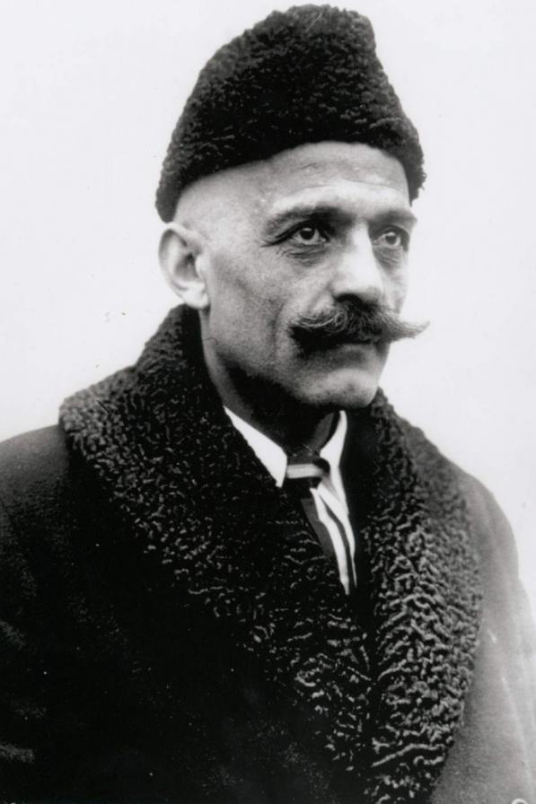

DeepL 訳 : George Ivanovich Gurdjieff (Wikipedia)

(image : Gurdjieff and the Study of Contemporary Religion | The Religious Studies Project - http://www.religiousstudiesproject.com/podcast/gurdjieff-and-the-study-of-contemporary-religion/ )
前置き
- 参考資料として記録しておく。(2022-08-31)
出典
George Gurdjieff - Wikipedia - https://en.wikipedia.org/wiki/George_Gurdjieff (2022-08-31 採取)DeepL 訳
George Ivanovich Gurdjieff (/ˈɡɜːrdʒiɛf/; Russian: Гео́ргий Ива́нович Гурджи́ев, tr. Geórgy Ivánovich Gurdzhíev, IPA: [ɡʲɪˈorɡʲɪj ɪˈvanəvʲɪd͡ʑ ɡʊrd͡ʐˈʐɨ(j)ɪf]; Armenian: Գեորգի Իվանովիչ Գյուրջիև c. 1866-1877 - 1949年10月29日）[2]は、アルメニアとギリシャ系の哲学者、神秘主義者、霊的教師、作曲家で、ロシア帝国のアレクサンドロップ（現アルメニアのギュムリ）に生まれた[3]。グルジェフは、ほとんどの人間は統一意識を持たず、そのために催眠の「覚醒睡眠」状態で人生を送るが、高い意識状態に目覚め、人間の潜在能力を完全に達成できる、と説いた。グルジェフはそのための方法について述べ、その学問を「ワーク」[4]（「自分自身への作業」という意味）あるいは「システム」と呼んだ[5]。 彼の原理と指示によれば、グルジェフの意識覚醒の方法は、ファシール、僧侶、ヨギの方法を統合しており、それゆえ彼はそれを「第4の道」と呼んだ[7]。 バイオグラフィー 幼少期 グルジェフ[8]は、トランスコーカサスのロシア帝国のアレクサンドロプで、コーカサス地方のギリシャ人の父イアニス・ゲルギアデス（ギリシャ語：Ἰωάνης Γεωργιάδης）[9] とアルメニア人の母エヴドキア（伝記作家ポール・ビークマンテイラーの記述）の間に生まれた。 [10]グルジェフという名前は、ポントス地方のギリシャの姓「ゲオルギアデス」（ギリシャ語：Γεωργιάδης）のロシア語化した形を表している。また、ツァーリ支配下のカルス州やグルジアでは、ギリシャ語とグルジア語の組み合わせは非常に一般的であり[8]、グルジア周辺のイスラム教徒がグルジア人を「グルジ」（語尾に-effが付く）と呼ぶことから、これも彼の名字のルーツである可能性がある。彼の正確な生年は不明であり、1866年から1877年にかけての推測がある。1866年とする説もある（ジェームズ・ムーアなど）。グルジェフが「私の内なる人生の最初の友人」と呼んだ女性オルガ・デ・ハルトマンと、1930年代初頭にグルジェフの秘書だったルイーズ・ゲプフェルト・マーチは、ともにグルジェフが1872年に生まれたと信じていた。パスポートでは生年月日が1877年11月28日となっているが、本人は「元旦の午前零時に生まれた（ユリウス暦）」と述べたこともある。生年月日は様々だが、遺体が埋葬されたフランスのセーヌ・エ・マルヌ県アヴォンの墓地の墓標には1872年の年号がプレートで刻まれている[12]。 カルスは、1878年から1918年まで、ロシアが支配するトランスコーカサス地方のカルス州の行政首都であり、オスマン帝国から最近獲得した国境地帯であった。草原や高山が広がり、多民族・多宗派の人々が住み、旅する神秘主義者や聖人を尊敬し、宗教の融合や改宗が行われてきた歴史がある。アルメニア高原の一部でありながら、カルス州にはアルメニア人、ロシア人、コーカサスギリシャ人、グルジア人、トルコ人、クルド人と、コーカサスゲルマン、エストニア人やモロカン、ドゥホボル、プリグニ、サブボットニクなどのロシアの宗派のコミュニティなど東欧と中央ヨーロッパの少数のキリスト教徒コミュニティが住んでいたのです。グルジェフは、特にヤジディ教徒のコミュニティについて言及している。また、大工でアマチュアのアシク（吟遊詩人）である父親[14]や、家族の友人で町のロシア教会の司祭であるディーン・ボルシュの影響を受けている。若き日のグルジェフはロシア語の科学文献を熱心に読んでいた[15]。 これらの著作に影響を受け、また説明できない現象をいくつも目撃したことから、科学にも主流の宗教にもない隠された真理が存在するという確信を持つようになった。 旅行記 グルジェフ自身の説明によると、成人して間もない頃、好奇心から中央アジア、エジプト、イラン、インド、チベット、ローマを旅行し、1912年に数年間ロシアに戻った。彼は自分の教えの出所については決して明言しなかった。彼の放浪の旅についての唯一の記述は、彼の著書『Meetings with Remarkable Men』に掲載されている。各章は個々の「注目すべき人物」にちなんで命名されており、その多くは「真理の探求者」たちの社会のメンバーとされている[17][18]。 グルジェフの死後、J.G.ベネットは彼のソースを広範囲に調査し、これらのキャラクターがグルジェフが言及した3つのタイプの人々を象徴していることを示唆した。ベネットは、グルジェフの死後、その資料を徹底的に調査し、これらの登場人物は、グルジェフが言うところの「肉体を中心とする1号、感情を中心とする2号、心を中心とする3号」の象徴であるとした。彼は、ダービッシュ、ファキール、絶滅したエッセネ派の子孫と出会い、その教えがサルモングの修道院に保存されていると主張している。また、この本には「砂地以前のエジプト」の地図を含む包括的な探求の物語があり、「サルモング一揆」との出会いで最高潮に達する[19]。 ビジネスキャリア グルジェフは、旅の間、奇妙な仕事と取引スキーム（そのうちの1つは、生垣の鳥を黄色に染め、カナリアとして売ることであると記述している）で自活していたと書いている[20]。 歴史的記録に関する限り、彼の再登場の際、彼は実業家になっていた。この時期に関する唯一の自伝的著作が『来るべき善のヘラルド』である。その中で、依存症の治療を専門とする催眠療法士として活動し、その手法のために人々をモルモットとして使用したことに触れている[21]。また、旅の間、『グレート・ゲーム』の一環として、ある種の政治活動をしていたとも推測されている[22]。 ロシアにて 1913年から1949年までの年表は、一次資料、独立した証人、相互参照、合理的な推論によって確認できる資料に基づいているようだ[23] 1912年の元旦、グルジェフはモスクワに到着し、従兄弟で彫刻家のセルゲイ・メルクロフや風変わりなラフミリエヴィッチなど最初の生徒を引きつけた。同年、サンクトペテルブルクでポーランド人のユリア・オストロフスカと結婚した。1914年、グルジェフはバレエ『魔術師たちの闘争』を宣伝し、弟子たちのスケッチ『真理の片鱗』の執筆を指導した。1915年にはP・D・ウスペンスキーを、1916年には作曲家トーマス・デ・ハルトマンとその妻オルガを弟子として受け入れた。その後、30人ほどの弟子を抱えた。ウスペンスキーは、すでに神秘主義的な作家としての名声を得ており、自らも東洋に知恵を求め、結局は失望した経験があった。この時期に教えられた第四の道の「体系」は、複雑で形而上学的であり、一部は科学的な用語で表現されていた。 1917年、革命の嵐が吹き荒れるロシアで、グルジェフはペトログラードを離れ、実家のあるアレクサンドロポールに戻った。10月革命の間、彼はコーカサスのエッセンツキ、そしてロシア南部の黒海沿岸のトゥアプス、マイコップ、ソチ、ポチに仮の研究共同体を設立し、多くのロシアの弟子たちと集中的な活動を行った。グルジェフは、「ロシアに始まり、ロシアに終わる」と言った。 1918年3月、ウスペンスキーはグルジェフから離れ、イギリスに居を構え、独自に第四の道を教えるようになった。二人はその後何十年もの間、非常にアンビバレントな関係を保つことになる。 その4ヵ月後、グルジェフの長姉とその家族が難民としてエッセンツキにやってきて、5月15日にトルコ人がアレクサンドロポールで父親を射殺したと知らせた。エッセンツキが内戦の危機にさらされる中、グルジェフは「インデュース山」への「科学探検」を予告する新聞記事を捏造した。科学者を装ったグルジェフは、14人の仲間（グルジェフの家族とウスペンスキーを除く）と共にエッセンツキを出発した。汽車でマイコプに向かったが、敵対行為で3週間も遅れた。1919年春、グルジェフは画家のアレクサンドル・ド・サルスマンとその妻ジャンヌに会い、彼らを弟子として受け入れた。ジャンヌ・ド・サルスマンに助けられ、グルジェフは彼の聖なる踊りの最初の公開デモンストレーションを行った（6月22日、トビリシ・オペラハウスでのムーブメント）。 グルジアとトルコで 1919年、グルジェフとその親しい弟子たちはトビリシに移った。そこでは、グルジェフの妻ユリア・オストロフスカ、シュトイエルンバル家、ハルトマン家、デ・ザルツマン家などが、彼の教えの基礎を集めていた。グルジェフは、まだ上演されていないバレエ「魔術師たちの闘争」に集中した。トーマス・デ・ハルトマン（数年前にロシア皇帝ニコライ2世の前でデビュー）はバレエの音楽を担当し、オルガ・イヴァノヴナ・ヒンゼンベルク（後にアメリカの建築家フランク・ロイド・ライトと結婚）はバレエの踊りを練習した[24]。 1919年にグルジェフは最初の人間調和発展研究所を設立した[25]。 1920年5月下旬、グルジアの政情が変わり、旧体制が崩れつつあった頃、彼の一行は黒海沿岸のバトゥミに行き、その後、船でイスタンブールに向かった[25]。グルジェフはペラのクンバラチュ通りに、後にガラタ塔近くの13 Abdullatif Yemeneci Sokakにアパートを借り入れた[26]。 [このアパートはメヴレヴィー教団（ジャラール・アルディン・ムハンマド・ルーミーの教えに従うスーフィー教団）のカーネカーフ（修道院）の近くにあり、グルジェフ、ウスペンスキー、トーマス・ド・ハルトマンがダルヴィッシュ旋回のセマ儀式に立ち会った場所である。イスタンブールでは、後に弟子となるベネット大尉（当時コンスタンチノープルの英国軍事情報部部長）にも会っており、その時のグルジェフの印象を次のように語っている。 1920年の秋、私はそこで初めてグルジェフに会ったが、これほどふさわしい環境はないだろう。グルジェフでは、東洋と西洋はただ出会うだけでない。東洋と西洋の違いは、人種や信条の区別を知らない世界観の中で消滅しているのだ。これが私の最初の印象であり、今も強く残っていることだ。コーカサス出身のギリシャ人である彼は、思いのほか純粋なアクセントでトルコ語を話した。これは、宮廷の狭い範囲内で生まれ育った者に特有のアクセントである。その容姿は、変わり者の多いトルコにあってさえ、十分に目を引くものであった。頭は剃られ、巨大な黒い口髭があり、目はある時は非常に青白く、ある時はほとんど黒く見える。身長は平均より低いが、体格の良さが感じられる。 エイボンのプリエール 1921年8月から1922年にかけて、グルジェフは西ヨーロッパを旅行し、ベルリンやロンドンなど、さまざまな都市で講演や実演を行った。彼はウスペンスキーの多くの著名な弟子たち（特に編集者のA.R.オラージュ）の忠誠心を引き付けた。イギリスの市民権を得ようとしたが失敗し、グルジェフはパリの南、有名なフォンテーヌブロー城に近いエイボンのプリオレ・デ・バス・ロージュに「人間の調和的発達のための研究所」を設立した。広大な敷地の中にある、かつては印象的だったがやや崩れかけた邸宅には、グルジェフの残された親族や白ロシアからの難民を含む数十人の側近が住んでいた。 新しい弟子には、C・S・ノット、ルネ・ズバー、マーガレット・アンダーソン、彼女の被後見人フリッツ・ペータースなどがいた。また、グルジェフの教えに惹かれた一般的な知識人や中流階級の人々は、修道院のスパルタンな宿泊施設や敷地内での重労働にしばしば違和感を覚えたという。グルジェフは、人間は肉体的、精神的、知的に成長する必要があるという教えを実践していたため、講義、音楽、舞踊、肉体労働が混在していたのである。年長の弟子たちは、プリエールの教えがロシアで教えられてきた複雑な形而上学的「体系」と異なることに気づいていた[27]。肉体的苦難に加え、弟子に対する彼の個人的行動は獰猛なものであった。 グルジェフは、私には完全に制御不能の怒りと思われる状態でベッドのそばに立っていた。オラージュは無表情で、青白い顔をして、窓から顔を出していた。突然、一瞬のうちにグルジェフの声が止み、全人格が変わった。彼は私に満面の笑みを浮かべ、信じられないほど穏やかで内面は静かで、私に立ち去るように合図し、それから衰えることなく暴言を吐いた。あまりにあっという間の出来事だったので、オラージュ氏はリズムが途切れたことにすら気づいていなかったと思う[28]。 この時期、1923年1月9日にキャサリン・マンスフィールドが彼の世話の下で結核のためにそこで亡くなったことから、グルジェフは「キャサリン・マンスフィールドを殺した男」として悪評を得る[29]。 しかし、ジェームズ・ムーアとウスペンスキーは、マンスフィールドは彼女がすぐに死ぬことを知っており、グルジェフは彼女の最後の日を幸せで充実したものにしたと主張している[30]。 最初の交通事故、執筆活動、北米訪問 1924年以降、グルジェフは北米を訪問し、A.R.オラージュから以前に教わっていた弟子たちを受け入れることになる。1924年、パリからフォンテーヌブローまで一人で運転中、交通事故に遭い、瀕死の重傷を負う。妻や母の看病を受けながら、医学的な予想に反して回復には時間がかかり、苦痛を伴った。まだ回復途中であったが、8月26日に研究所を正式に「解散」し（実際には、「あまり熱心でない」弟子たちだけを分散させた）、その理由を「将来、別の価値ある理由を口実に、私の生活をあまりにも快適にするすべての人々を、あれやこれやで私の視界から追い出す」仕事であると説明した[32]。 回復後、彼はアルメニア語とロシア語の混じった言葉で『すべてと万物』の第一部である『ベルゼバブ物語』を書き始める。この本は、意図的に複雑で分かりにくく、読者にその意味を見出すための「作業」を強いるものであった。また、集中力を高めるために、騒がしいカフェで執筆するなど、独自の方法で構成されていた。 1925年にグルジェフの母が、1926年6月に妻が癌を発症し、死去した。ウスペンスキーは彼女の葬儀に参列した。フリッツ・ペータースによれば、グルジェフは1925年11月から1926年の春までニューヨークに滞在し、10万ドル以上の資金調達に成功した[33]。その後、6、7回のアメリカ旅行をすることになるが、そこで彼は威勢がよく、不謹慎な金の要求をして多くの人を疎外することになる。彼がスーフィズムのマラマティヤの技法に従っているという点で、意図的に不評を買っていたと解釈する者もいる[34]。 シカゴを拠点とするグルジェフ・グループは、プリューレで1年間修行した後、1927年にジャン・トゥーマーによって設立された。ダイアナ・ヒューバートはシカゴのグループの常連で、1932年と1934年にグルジェフが何度かグループを訪れたことを、彼に関する回想録の中で記録している[35]。 アメリカでの資金調達の努力にもかかわらず、プリエールの運営は負債を抱え、1932年に閉鎖された。グルジェフはパリで新しい教団を設立した。ロープと呼ばれるこのグループは、女性だけで構成され、その多くは作家であり、何人かのレズビアンがいた。そのメンバーには、キャサリン・ハルム、ジェーン・ヒープ、マーガレット・アンダーソン、エンリコ・カルーソの未亡人ドロシーなどがいた。グルジェフはロープのメンバーを通じてガートルード・スタインと知り合いになったが、彼女は決して信者ではなかった[36]。 1935年、グルジェフは『すべてとすべて』の制作を中止する。彼は計画された3部作の最初の2部を完成させていたが、第3シリーズに着手したのみであった。(1936年、パリのコロネル・ルナール通り6番地にアパートを構え、そこで生涯を過ごすことになる。1937年、兄のドミトリーが亡くなり、ザ・ロープは解散した。 第二次世界大戦 コロネル・ルナール通り6番地のアパートは、その目的にはとても小さかったのですが、彼は第二次世界大戦中も生徒のグループを教え続けました。来訪者は、東洋の珍味のコレクションが並べられ、彼の奥の院となっていた食料庫や、ウォッカとコニャックで「バカ者」[37]に凝った乾杯をしながら開いた晩餐会のことを思い出している。長年、身体的に印象的な姿をしていた彼は、今では明らかに腹が減っていた。彼の教えは当初の「システム」とはかけ離れたもので、ことわざやジョーク、個人的な交流に基づいていたが、生徒たちはできれば彼の大作『ベルゼバブ物語』のコピーを3回読むことを要求された。 また、個人的な事業（東洋の絨毯やカーペットの販売などを断続的に行っていた）を行っていたため、戦争という困難な状況に置かれた近隣の人々を慈善的に救済することができたが、それが当局の目に留まり、独房に一晩閉じ込められることになった。 最終年度 戦後、グルジェフはかつての弟子たちと再会しようとした。ウスペンスキーは渋ったが、彼の死後（1947年10月）、未亡人は残された弟子たちにパリのグルジェフに会うことを勧めた。J・G・ベネットもイギリスから訪れ、25年ぶりの再会を果たした。英国にいるウスペンスキーの弟子たちは皆、グルジェフが死んだものと思っていた。ウスペンスキーの死後、初めて生存を知ったが、ウスペンスキーはグルジェフが生きていることを伝えなかった。彼らはそれを聞いて大喜びし、リナ・ハンズ、バジル・ティリー、キャサリン・マーフィーら多くのウスペンスキー門下生がパリのグルジェフを訪ねるようになった。ハンズとマーフィーは、近刊の『すべてとすべて』のタイプや打ち直しに取り組んだ。 1948年、グルジェフは2度目の交通事故に遭うが、またしても予想外の回復を遂げる。 「私は瀕死の人間を見ているようだった。これだけでは表現しきれない。車から出てきたのは死人、死体であり、しかも歩いていた。幽霊を見たときのように震えた」。鉄のような粘り強さで、何とか自分の部屋を確保し、そこで座り込んで言った。「今、すべての臓器が破壊されている。新しい臓器を作らなければならない」。そして、ベネットに向かい、微笑みながら言った。「今晩は、夕食においで。今夜は食事に来なさい。私は体を鍛えなければならない」と言った。その時、激しい痛みが体を襲い、耳から血が噴き出した。ベネットは思った。「脳出血だ。このまま無理に体を動かしていたら、死んでしまう」。しかし、彼はこう考えた。「このままでは死んでしまう。しかし、彼はこうも考えた。「このまま体が動かなくなったら、彼は死んでしまう。彼は自分の体を支配する力を持っている」[38]。 回復したグルジェフは、『ベルゼバブ物語』の正式な出版を計画し、ニューヨークへ2度にわたって足を運んだ。また、先史時代の有名なラスコー洞窟壁画を訪れ、弟子たちにその意味を解釈させた。 葬儀はパリのダル通り12番地の聖アレクサンドル・ネフスキーロシア正教会大聖堂で行われた[39]。彼はアボン（フォンテーヌブローの近く）の墓地に埋葬されている[40]。 子供たち グルジェフの子供であることを証明する証拠や文書はないが、以下の7人が彼の子供であると考えられている[41]。 スヴェトラーナ・ヒンゼンベルク（1917-1946）、オルガ（オルギヴァンナ）・イヴァノヴナ・ヒンゼンベルクの娘で、後に建築家フランク・ロイド・ライトの継娘になる[42][43]。 ニコライ・スターンバル（1919-2010）、レオニード・ロバートヴィチ・ド・スターンヴァルの妻エリザヴェータ・グリゴリエヴナを母に持つ[44]。 ミシェル・ド・ザルツマン（1923-2001）、母はジャンヌ・アルマン・ド・ザルツマン、彼は後にグルジェフ財団の代表となった[45]。 シンシー・ソフィア・"ドゥシュカ"・ハワース（1924-2010）、母はダンサーのジェスミン・ハワース[46][47][48] 彼女は後にグルジェフ遺産協会を設立した[48]。 イブ・テイラー（1928年生まれ）、母親は彼の信奉者の一人であるアメリカの社交家エディス・アネスレイ・テイラー[41]であった。 セルゲイ・チャヴェルディアン；母親はリリー・ガルムニアン・チャヴェルディアン[49]。 アンドレイ、ゲオルギーとしてのみ知られる母親との間に生まれる[49]。 グルジェフには姪のルーバ・グルジェフ・エブリットがおり、彼女は約40年間（1950年代から1990年代）、ロンドンのナイツブリッジで小さいがかなり有名なレストラン、ルーバズ・ビストロを経営していた[50][51][52]。 アイデア グルジェフは、人は統一意識を持たず、むしろ催眠術的な「目覚めの眠り」の状態で生きているため、現状のままでは現実を認識することができないと考えた。 「その結果、人はそれぞれ完全に主観的な視点から物事を認識することになる。彼は、典型的な状態の人々は無意識のオートマトンとして機能するが、人は「目覚め」て全く別の種類の人間になることができると主張した[54]。 現代の研究者の中には、グルジェフの自己想起の概念は「仏教の意識の概念や一般的な『マインドフルネス』の定義に近い......」と主張するものがいる。マインドフルネス」として英語に翻訳されている仏教用語は、パーリ語の「sati」に由来し、それはサンスクリット語の「smṛti」と同じである。どちらの言葉も『思い出す』という意味である」[55]。 自己啓発の教え 主な記事 第四の道 グルジェフは、地球上の宗教的・精神的伝統の既存の形態の多くは、その本来の意味と活力とのつながりを失っており、したがって、それらの開始時に意図された方法で、もはや人類に奉仕することができないと主張した。その結果、人間は古代の教えの真理を実現することができず、ますます自動機械のようになり、外部からのコントロールに弱くなり、第一次世界大戦のような集団精神異常のような考えられない行為をする可能性が高まっていた。 グルジェフによれば、人間の3つの次元のうち1つの次元、すなわち感情、肉体、心のいずれかだけが、こうした学校や宗派で発達する傾向があり、一般にグルジェフが呼ぶところの他の能力や中心を犠牲にして発達するのである。その結果、これらの道では、正しくバランスの取れた人間を作り出すことができない。さらに、精神的知識を得るための伝統的な道（グルジェフはこれを3つ、すなわち、ファキールの道、僧侶の道、ヨギの道に還元した）を行おうとする者は、この世の生活を放棄することを要求された。こうしてグルジェフは、ヨーロッパやアメリカで現代的な生活を送る現代人の要求に応えられるような「第四の道」[56]を開発したのである。グルジェフの修練は、身体、心、感情を別々に発達させるのではなく、3つすべてに働きかけ、包括的でバランスのとれた内的発達を促すものであった。 他の精神的伝統と同様に、グルジェフは、覚醒につながる変容をもたらすために、人はかなりの努力を払わなければならないと説いた。グルジェフは、実践される努力を「ワーク」または「自分自身へのワーク」と呼んだ[57]。グルジェフによれば、「...自分自身へのワークは、ワークしたいと願い、決断することほど難しいことではない」[58]。ウスペンスキーの死後、弟子たちは彼の講義をもとに『第四の道』と題する本を出版した[59]。 グルジェフの教えは、宇宙における人類の位置づけの問題と、潜在的な可能性-人間としての天賦の才能とみなされているが、ほとんど結実していない-を開発することの重要性を取り上げていた。より高い意識のレベル、より高い身体、内なる成長と発展は現実の可能性であり、それでも達成するために意識的な作業を必要とする、と彼は説いた[61]。 グルジェフはその教えの中で、聖書や多くの宗教的な祈りのような様々な古代のテキストに明確な意味を与えていた。彼はそのようなテキストが一般的に言われている意味とは全く異なる意味を持っていると信じていた。また、「眠らない」、「目覚めよ、あなたは時を知らない」、「天の国は内にある」などは、本質が忘れられた教えを指し示す聖書の記述の一例である[62]。 グルジェフは様々な方法で注意とエネルギーを増やし集中させ、白昼夢やぼんやりを最小限にする方法を人々に教えていた。彼の教えによれば、この自分自身の内面的な開発は、可能な限りさらなる変化のプロセスの始まりであり、その目的は、人々をグルジェフが信じるあるべき姿に変容させることである[63]。 文化によって異なり、しばしば矛盾し、偽善的であると彼が述べる「道徳」に不信感を抱き、グルジェフは「良心」の重要性を大いに強調した。 また、内なる注意をより集中的に働かせるために、弟子たちに「聖なる踊り」や「動き」を教え、後に「グルジェフ運動」として知られるようになり、彼らはグループとして一緒にそれを実行した。また、人里離れた修道院などを訪れて聞いた話に触発されて、弟子の一人であるトーマス・ド・ハルトマンと共同で書いたピアノのための音楽も残している。 また、グルジェフは、弟子の自己観察を促すために、「止まれ」という練習をはじめ、さまざまな練習を行った。その他にも、常に白昼夢を見ている弟子を覚醒させるためのショックはいつでも可能だった。 メソッド "ワーク "とは、要するに意識開発のための訓練である。グルジェフは、会議、音楽、動き（聖なる踊り）、著作、講義、革新的な形態のグループワークや個人ワークなど、数多くの方法と素材を用いました。これらの様々な方法の機能の一部は、心に染み付いた習慣のパターンを弱め、元に戻し、洞察の瞬間をもたらすことであった。ロシアでは、彼は教えを小さなサークルに限定していると説明されたが[65]、パリと北アメリカでは多くの公開デモンストレーションを行った[66]。 グルジェフは、自己認識の伝統的な方法、つまり、（それぞれ、苦痛、献身、研究を通して獲得された）ファシール、僧侶、ヨギの方法は、それ自体では不十分であり、しばしば様々な形の停滞と一面性につながると感じていた。このような状況の中で、彼は、伝統的な道を補強し、発達の過程を早めることを目的とした方法を考案した。彼はこれらの方法を「ずる賢い人の道」[67]と呼ぶこともあったが、それは、そうしなければ実質的な結果を出さずに何年も続くかもしれない発達のプロセスを、一種の近道として構成していたからである。より熟達した教師は、弟子の個々の要求を見抜き、その個人の意識の変容をもたらすとわかっている課題を設定するのである。禅宗では、師が弟子に悟りを開かせるために、さまざまな方法（時には極めて異例な方法）を用いていたことが、歴史的によく知られている。 音楽 グルジェフの音楽は、3つの時期に分けられる。第1期」は初期の音楽で、バレエ『魔術師たちの闘争』の音楽や、1918年前後の初期の楽章のための音楽が含まれる。 1920年代半ばの音楽で、コーカサスや中央アジアの民族音楽、宗教音楽、ロシア正教の典礼音楽などをルーツとする豊かなレパートリーを持つ。この音楽は、しばしばプリエールのサロンで最初に聴かれ、そこで多くの曲が作曲された。最近、ショット社からこのピアノ・レパートリーの4巻が出版され、1923年から24年にかけての「ムーブメント」の実演のためにグルジェフとド・ハルトマンが準備した音楽のオーケストラ版など、新しい録音が豊富にある。これらの作品のピアノ独奏版は、セシル・ライトル[70]、キース・ジャレット[71]、フレデリック・チウ[72]によって録音されている。 最後の音楽時代」とは、占領期から戦後すぐの1949年に亡くなるまで、グルジェフがパリのアパートで開いた夕食会にしばしば登場した即興のハルモニウム音楽である。2010年5月、ニール・ケンプファー・ストッカーが亡き継娘ドゥシュカ・ハワースの遺品から38分間の未発表のピアノソロ曲（アセテート）を購入した[73]。2009年、ピアニストのエラン・シクロフが『Laudamus』をリリースした。1998年、アレッサンドラ・セレッティがグルジェフ／デ・ハルトマンによる18曲を収録した『Hidden Sources』（Kha Records）をリリースした[74]。 イギリスのコンサートピアニストで作曲家のヘレン・パーキン（結婚後の名前：ヘレン・アディ）は、ウスペンスキーを通じてグルジェフに出会い、戦後初めてパリのグルジェフを訪れた[76]。 1965年に夫ジョージ・アディとともにオーストラリアに移住し、ニューポートのグルジェフ協会を設立した[77]。しかし、彼女はムーブメントの教師でもあり、ムーブメントのための音楽も作曲した[78]。この音楽のいくつかは出版され、個人的に流通している[79]。 ムーブメント 主な記事 グルジェフの動き ムーブメント（聖なる踊り）は、グルジェフ・ワークの不可欠な部分を構成している。グルジェフは自らを「踊りの教師」と称することもあり、モスクワで「魔術師の闘い」と呼ばれるバレエを上演しようとしたことで、最初に世間の注目を浴びることになった。 また、ピーター・ブルック監督の映画『Meetings with Remarkable Men』のワンシーンにも登場している。 著作 グルジェフは、「すべてとすべて」というシリーズのタイトルで、ユニークな3部作を書いた。第1巻は、グルジェフが死の直前に完成させ、1950年に初めて出版したもので、「人間の人生に対する客観的に公平な批判、あるいは孫へのベルゼバブの物語」と題された第1シリーズである。1238ページに及ぶこの本は、地球という惑星の存在と宇宙を支配する法則について、ベルゼバブが孫に説明したことを語る、長い寓話的作品である。グルジェフが深く考察した哲学の広大な基盤を提供するものである。1992年、グルジェフ信奉者の一部が『ベルゼバブ物語』を再編集し、別版として出版したことが議論を呼んだ。[詳しい説明は、ポール・ビークマン・テイラー著『グルジェフの言葉の世界』（2014年）を参照]。ベルゼブブ物語』の最初の目次のページにある「親切なアドバイス」のページでは、3つのシリーズのそれぞれを順番に読むことを義務付けるという彼自身のプログラムが示され、次のように結ばれている。「そうしてこそ、私の著作について、あなた自身にのみふさわしい、あなた自身の公平な判断を下すことを期待できるようになるのです。そうしてこそ、あなたの理解に従って、私が期待するあなたの自己のための具体的な利益を得るという私の希望が実現するのである"。 ジャンヌ・ド・ザルツマンが編集した死後の第二叢書は、『驚くべき人々との出会い』（1963年）と題され、一見、彼の若い頃の回想録としてわかりやすく書かれているが、「アラビアンナイト」の装飾や寓意文もいくつか含まれている。また、未完のまま執筆され、ジャンヌ・ド・サルスマンが編集した『第三シリーズ』（人生はそのとき初めて現実となる）は、晩年のグルジェフの内面の葛藤が親密に語られており、いくつかの講義の記録も収録されている。グルジェフの思想や方法については、膨大な量が書かれ、また増え続けているが、彼自身の挑戦的な文章が主要な資料であることに変わりはない。 受容と影響 グルジェフの著作や活動に対する意見は分かれている。その一方で、グルジェフは大きなエゴを持ち、常に自己顕示欲の強いカリスマであったとする批評家もいる[61]。 また、"Gurdjieff "は、ウォルター・イングリス・アンダーソン、ピーター・ブルック、ケイト・ブッシュ、ダービー・クラッシュ、ミュリエル・ドレイパー、ロバート・フリップ、キース・ジャレット、ティモシー・リアリー、デニス・ルイス、ジェームズ・ムーア、A・R・オレージ、P・オウスペンスキーなど一部のアーティスト、作家、思想家に対して大きな影響を与える存在だった[80][90][90][90][90][90][90]。D. ウスペンスキー、モーリス・ニコル、ルイス・ポーウェルス、ロバート・S・デ・ロップ、ジョージ・ラッセル、デヴィッド・シルヴィアン、ジャン・トゥーマー、ジェレミー・レイン、セリオン、P. L. トラバース、アラン・ワッツ、コリン・ウイルソン、ロバート・アントン Wilson、Frank Lloyd Wright、John Zorn、 [81] Franco Battiato. グルジェフの個人的な教え子としては、P・D・ウスペンスキー、オルガ・デ・ハルトマン、トマス・デ・ハルトマン、ジェーン・ヒープ、ジャンヌ・デ・ザルツマン、ウィレム・ナイランド、ペントランド卿（ヘンリー・ジョン・シンクレア）、ジョン・G・ベネット、アルフレッド・リチャード・オラージュ、モーリス・ニコル、ルネ・ダウマルなどが有名である。 グルジェフは、東洋と西洋の古代の教えに新たな生命を与え、実践的な形にした。例えば、ソクラテスやプラトニックが強調した「吟味された人生」は、グルジェフの教えの中で自己観察の実践として繰り返されている。自己鍛錬と自制に関する彼の教えは、ストア派の教えを反映している。ヒンズー教や仏教の「愛着」の概念は、グルジェフの教えの中で「同一視」の概念として繰り返されている。また、「3つの食物」についての記述はアーユルヴェーダのそれと一致し、「時間は呼吸である」という記述はヴェーダの占星術であるジョーティシュと呼応している。同様に、グルジェフの宇宙論は、新プラトン主義や、ロバート・フラッドの大宇宙的音楽構造の扱いなど、古代や秘教的な資料と照らし合わせて「読む」ことができる。 グルジェフの教えの中で、ここ数十年で注目されるようになったのは、エニアグラムという幾何学図形である。グルジェフの教えを学ぶ多くの人にとって、エニアグラムは難解で、決して完全には説明できない公案であり続けている。エニアグラムのこのバージョンの起源をたどる多くの試みがなされてきた。他の図形との類似性も見出されたが、エニアグラム図形を初めて公にしたのはグルジェフであり、彼だけがその真の出所を知っていたと思われる[citation needed] 他の者はエニアグラム図形を性格分析、主にオスカー・イチャーゾ、クラウディオ・ナランホなどによって開発されたエニアグラム・オブ・パソナリティと関連して用いている。この応用のほとんどの側面は、グルジェフの教えやエニアグラムの説明とは直接関係がない。 グルジェフはその死後、多くのグループの結成を促し、そのすべてが今日でも機能し、彼の思想に従っている[82]。グルジェフの思想に影響を受けた最大の設立組織であるグルジェフ財団は、1950年代前半にジャンヌ・ド・サルズマンが組織し、彼の他の弟子たちと協力して彼女を率いていた。他のグルジェフの弟子たちは独立したグループを形成した。グルジェフの最も近い弟子の一人で、ニューヨークのグルジェフ財団の創設者であり理事であったウィレム・ナイランドは、1960年代初頭に自分のグループを結成するために退会した。ジェーン・ヒープはグルジェフによってロンドンに派遣され、1964年に亡くなるまでグループを率いていました。1929年にグルジェフの弟子となったルイーズ・ゲプファート・マーチは、1957年に独自のグループを立ち上げ、ニューヨーク州のフィンガーレイク地方にロチェスター民芸ギルドを設立した。独立した盛んなグループも形成され、当初はオレゴン州ポートランド近郊でジョン・G・ベネットとA・L・スタヴリーが率いていました。 弟子たち グルジェフの著名な弟子には以下のようなものがいる[83]。 ピーター・D・ウスペンスキー（1878-1947）は、ロシアのジャーナリスト、作家、哲学者であった。1915年にグルジェフに出会い、その後5年間をグルジェフのもとで学び、1921年にロンドンで独自のグループを結成した。ウスペンスキーは最初の「キャリア」グルジェフになり、晩年はロンドンとニューヨークで独立した第四の道のグループを率いた。彼はグルジェフとの出会いについて『奇跡の探求』を書き、それはグルジェフの初期のグループ実験について最もよく知られ、最も広く読まれている記録である。 トーマス・デ・ハルトマン（1885-1956）は、ロシアの作曲家である。1916年にサンクトペテルブルクで妻オルガとともに初めてグルジェフに会った。彼らは1929年までグルジェフの近しい弟子であり続けた。その間、彼らはパリ近郊のグルジェフ「人間の調和的発展のための研究所」で暮らした。1925年7月から1927年5月にかけて、トーマス・ド・ハルトマンは、グルジェフが収集し、彼の動作練習に使用した音楽の一部を書き起こし、共同で作曲した。二人はピアノのために編曲した数百曲のコンサート音楽を共同制作した。このコンサート音楽は、1950年代から1980年代にかけて個人的に録音・出版された後、1998年にトライアングル・レコードから「グルジェフの音楽／デ・ハルトマン（トーマス・デ・ハルトマン、ピアノ）」として49曲入りレコード盤4枚で公刊され、1989年には56曲入り3CDセットとして再発行された。その後、1996年から2005年にかけてショット社から「Gurdjieff / de Hartmann Music for the Piano」全4巻が、1997年から2001年にかけてショット社/ウェルゴ社から同名のCD全4巻（3人のコンサートピアニストとの録音、9枚）が発売された。オルガ・デ・ハルトマン（旧姓アルカディエヴナ、1885-1987）は、プリエール時代にグルジェフの個人秘書を務め、その間に書かれた著作のほとんどを口述筆記で書きとめた。また、彼女は『現実世界からの眺め』（1973年）という本の中で、グルジェフの初期の講演を認証している。ド・ハートマン夫妻の回想録『グルジェフ氏との生活』（第1版、1964年、第2版、1983年、第3版、1992年）は、彼らのグルジェフ時代を詳細に記録したものである。彼らのモントリオールのグルジェフグループ、文学、音楽の遺産は、引退したカナダ国立映画局のプロデューサー、トム・デイリーが代表を務めている。 ジャンヌ・ド・サルツマン（1889-1990）。アレクサンダーとジャンヌ・ド・サルスマンは、1919年にティフリスでグルジェフに出会った。彼女はもともとダンサーで、ダルクローズ・オイリュトミーの教師であった。彼女は、ジェスミン・ハワースやローズ・メアリー・ノットとともに、グルジェフの振り付けによる動きの練習法を伝え、ニューヨークのグルジェフ財団、パリのグルジェフ研究所、ロンドンのグルジェフ協会株式会社、その他1953年に設立した団体を通じて、グルジェフの教えを制度化する役割を担った。また、米国にトライアングル・エディションを設立し、グルジェフの遺稿の著作権を主張するインプリントを発行している。 ジョン・G・ベネット（1897-1974）は、英国の情報将校、ポリグロット（英語、フランス語、ドイツ語、トルコ語、ギリシャ語、イタリア語に堪能）、技術者、産業研究ディレクター、作家、教師で、心理学と精神性、特にグルジェフの教えに関する多くの著書でよく知られています。1920年にイスタンブールでウスペンスキーとグルジェフに出会い、1923年8月にグルジェフの研究所で過ごし、1922年から1941年にかけてウスペンスキーの弟子となり、グルジェフが生きていることを知った後、1949年にはパリに頻繁に訪れるグルジェフの一人であった。Witness: the Autobiography of John Bennett (1974), Gurdjieff: Making a New World(1974), Idiots in Paris: diaries of J. G. Bennett and Elizabeth Bennett, 1949 (1991) を参照されたい。 アルフレッド・リチャード・オラージュ（1873-1934）は、雑誌『ニューエイジ』で知られる影響力のあるイギリスの編集者であった。1921年にウスペンスキーのロンドン講演に参加し始め、1922年初めにウスペンスキーが初めてロンドンを訪れた際にグルジェフに会った。その後まもなくオラージュは『ニューエイジ』を売却し、プリエにあるグルジェフの研究所に移り、1924年にはグルジェフから研究所のニューヨーク支部の指導者に任命された。1924年7月にグルジェフが自動車事故で死にかけた後、1924年中の長期療養と数年間の集中執筆期間のため、オラージュは1931年までニューヨークを続けた。この間、オラージュはグルジェフの助手として『ベルゼバブ物語』（1931年）、『驚くべき男たちとの出会い』（1963年）の英文タイプスクリプトの編集を担当することになる。この時期については、ポール・ビークマン・テイラーが『グルジェフとオラージュ』の中で詳しく述べている。Gurdjieff and Orage: Brothers in Elysium (2001)で詳述されている。 モーリス・ニコル（1884-1953）はハーレー街の精神科医で、カール・ユングのロンドン駐在員であった。オラージュとともに1921年のウスペンスキーのロンドン講演に参加し、そこでグルジェフに出会った。妻のキャサリンと娘とともに、グルジェフのプリオーレ研究所でほぼ1年間を過ごす。1年後、ロンドンに戻ったニコルは、再びウスペンスキーのグループに参加する。1931年、ウスペンスキーの助言により、イギリスで独自の第四の道グループを立ち上げる。グルジェフとウスペンスキーの教えに関する心理学的解説』（ボストン：シャンバラ社、1996年、サミュエル・ワイザー社、1996年）の百科全書的な6巻のシリーズで最もよく知られる人物である。 ウィレム・ナイランド（1890-1975）はオランダ系アメリカ人の化学者で、1924年初頭、グルジェフの最初の訪米の際に初めて会った。彼はグルジェフ研究所NY支部のチャーターメンバーであり、1924年から1931年にかけてオラージュの会合に参加し、1953年からはグルジェフ財団のチャーターメンバーとしてその形成期を過ごした。1960年代初頭には、ニューヨーク州ワーウィックに独立したグループを設立し、そこで自分の集会をオープンリール式のオーディオ録音し始め、それが約2600本の90分オーディオテープからなる私設図書館に保存されるようになった。これらのテープの多くは、書き起こしや索引付けもされていますが、未発表のままです。イルミス・B・ポポフ著『グルジェフ・グループワーク・ウィレム・ナイランド』（1983年）は、ナイランドのグループワークについてスケッチしている。 ジェーン・ヒープ（1883-1964）は、アメリカの作家、編集者、芸術家、出版人である。1924年にグルジェフがニューヨークを訪れた際に出会い、グリニッジ・ヴィレッジの自分のアパートでグルジェフ研究会を立ち上げる。1925年、彼女はパリに移り、グルジェフの研究所で学び、1935年にグルジェフが彼女をロンドンに送り、C・S・ノットが設立したグループを彼女が死ぬまで率いるまで、パリでグループを再確立した。ジェーン・ヒープのパリのグループは、彼女が去った後、グルジェフの「ロープ」グループとなり、マーガレット・アンダーソン、ソリタ・ソラノ、キャサリン・ハルム、その他、グルジェフが彼の最初の2冊の本の編集中に役立つと証明した数名の著名な作家を含んでいました。 ケネス・マクファーレン・ウォーカー（1882-1966）は、イギリスの著名な外科医であり、多作な作家であった。ウスペンスキーのロンドン・グループのメンバーとして数十年にわたり活動し、ウスペンスキーが1947年に亡くなった後は、パリのグルジェフを何度も訪れている。一般読者にわかりやすい医学書を多数出版したほか、グルジェフの思想について最も早い時期に情報を得たものとして、Venture with Ideas (1951) とA Study of Gurdjieff's Teaching (1957) を執筆した。 Henry John Sinclair, 2nd Baron Pentland (1907-1984) は、1930年代から1940年代にかけてウスペンスキーの弟子であった。1949年にパリのグルジェフを定期的に訪れ、1953年にジャンヌ・ド・サルスマンがニューヨークにアメリカ・グルジェフ財団を設立した際に、その理事長に任命された。1950年代半ばにはカリフォルニア・グルジェフ財団を設立し、亡くなるまでアメリカ財団の各支部の理事長を務めた。ペントランドは、1974年に設立されたトライアングル・エディションズの社長にも就任した。 批評家 ルイ・パウエルスは、特に、人を「催眠睡眠」によく似た状態で「眠っている」と考えることに固執していることでグルジェフを批判している[84]。グルジェフは、敬虔で、善良で、道徳的な人は他の人よりも「霊的に発達」しておらず、皆等しく「眠っている」のだと、時に具体的にさえ述べている[85]。 ヘンリー・ミラーはグルジェフが自分自身を聖なるものと考えていないことを認めていたが、フリッツ・ピータースの『グルジェフとの少年時代』に短い紹介文を書いた後、ミラーはグルジェフが彼の研究所を名付ける際に信じたように人々は「調和した人生」を送るためのものではないと書いている[86]。 批評家はグルジェフが平均的な人の生活を構成する要素のほとんどに価値を与えていないことを指摘している。グルジェフによれば、平均的な人が所有し、成し遂げ、行い、感じることのすべては完全に偶然であり、いかなる主体性もないのである。日常的な普通の人は機械として生まれ、機械として死ぬのであって、それ以外のものになる可能性はない[87]。この信念は、人間は生きている魂であるというユダヤ教・キリスト教の伝統に反しているように思われる。グルジェフは、魂の所有（彼が「目覚めている」ことと同一視する心理的な統合の状態）は、弟子が長い期間にわたって最も骨の折れる仕事によってのみ到達できる「贅沢」であると信じていた。福音の真の意味が根付くことができなかった大多数の人々[88]は、「破壊へと導く」「広い道」を歩んでいた[89]。 ベルゼブブの孫への物語』（参考文献参照）において、グルジェフは、東洋と西洋の主流宗教の創始者に対する尊敬と、歴代の信者がそれらの宗教の教えを作ったものに対する軽蔑（大体において）を表明している。また、「正統派の愚か者」と「異端派の愚か者」（ロシア語の「ドゥラク（愚か者）」に由来する）についての議論は、彼を宗教の歪曲に対する批判者として位置づけ、ひいてはそれらの伝統の中の一部から批判の対象とされることになった。グルジェフは、ウスペンスキーなどの一部の人々によって、主流の宗教の価値、慈善活動、一般的に善悪を行うことの価値を完全に無視していたと解釈されている[90]。 グルジェフを批判する元弟子たちは、彼がいかなる種類の「グルの聖性」に対する気取りが全くないように見えるにもかかわらず、多くの逸話において、彼の行動は信者を冷笑的に操る人間の不愉快で不純な性格を示していると主張している[91] グルジェフ自身の弟子は彼を理解しようと格闘していた。例えば、1943年のリュック・ディートリッヒとアンリ・トラコールの間の文書によるやりとりがある。「L.D.：グルジェフがあなたの幸福を願っていることをどうやって知るのですか？H.T.：私は時々、自分がいかに彼に関心がないか、そして彼がいかに強く私に関心を寄せているかを感じる。それによって、私は意図的な感情の強さを測るのです」[92]。 ルイ・パウエルスは『グルジェフ』（Editions du Seuilから1954年にパリで出版された初版）を書いた[93]。 インタビューでパウエルスはグルジェフの作品について次のように語っている。「2年間、私を啓発し、そして燃やすような練習をした後、私は左目の中心静脈に血栓ができ、体重が99ポンドになって病院のベッドにいる自分に気がついた......。恐ろしいほどの苦悩と深淵が私を待っていた。しかし、それは私のせいなのだ」[94]。 パウエルスは、ルドルフ・ヘス副総統を弟子に持つ地政学の父であるカール・ハウスホーファーがグルジェフの言う真の「真理の探求者」の一人であると信じていた。1930年代のジャーナリスト、ロム・ランドウによると、20世紀初頭、アブドゥラはグルジェフがチベットのロシアの秘密工作員であり[citation needed]、ダライラマの家庭教師である「ハンブロ・アクアン・ドルジェフ」（＝アガン・ドルジェフ）と名乗っていると話した[95]が、実際のドルジェフは、ペテルブルクの仏教寺院に住み、革命後スターリンによって投獄された[95]。ジェイムズ・ウェッブはグルジェフがドルジエフの助手ウシェ・ナルズノフ（＝オヴシェ・ノルズノフ）だったのではないかと推測している[96]。 コリン・ウィルソンは「...グルジェフは女生徒を誘惑するという評判がある」と書いている[96]。(1960年にロードアイランドのプロビデンスで、ある男性がグルジェフの隠し子の一人であると指摘された）。これを教えてくれた教授は、グルジェフがアメリカ各地に多くの子供を残していることも断言していた）」[97]。 オラージュ版』の中でC・デイリー・キングは、グルジェフがオラージュの教えに対して抱いた問題は、「オラージュ版」であるオラージュ自身がグルジェフの評価において十分な感情を持っておらず、「信じられない心」と「信仰心」が十分でないことであると推測している。キングは、グルジェフはこれほど明確かつ具体的に述べてはいないと書いているが、彼にとってはグルジェフの言うことは何も具体的で明確ではないとすぐに付け加えている[citation needed]。 Oshoによると、グルジェフのシステムは不完全であり、クンダリニーに不都合なダービッシュの源から引き出している。ナクシュバンディのようないくつかのスーフィー教団は、クンダリニーから引き出され、クンダリニーに従順である[98]。 1966年に「ラファエル・ルフォール」によって『グルジェフの教師たち』という本が出版された。グルジェフの教えは実際にはナクシュバンディのスーフィーの教えから派生したものであると示唆した[99]。この本はその後、イドリース・シャーとオマー・アリー・シャー兄弟のスーフィー派に起因するとされ、その信憑性が疑われており[99][100]、さらにグルジェフの伝記作家ジェームズ・ムーアは「不愉快な作り話」として描写している[101]。この見解は「グルジェフのより正統的な信奉者によって」疑問視されているが[102]、ウィリアム・ジェームズ・トンプソンやアンナ・チャレンジャーなどの他の研究者は、グルジェフの作品のテキスト分析が、ナクシュバンディやスーフィズム伝承の賢愚ムラ・ナスルディンなどのイスラムとスーフィーの人物への言及を示していると主張している[102]。 書誌情報 グルジェフの死後、アメリカでは3冊の本が英語で出版された。1950年にE. P. Dutton & Co.から出版された『ベルゼバブの孫への物語』、1963年にE. P. Dutton & Co. 1963年にE.P.ダットン社から出版された「Meetings with Remarkable Men」、「Life is Real Only Only」などがある。1963年にE.P.ダットン社から出版された『驚くべき人々との出会い』、そしてE.P.ダットン社が個人的に印刷し、1978年にトライアングル社から個人配布用に出版された『人生はそのときだけ本当である、「私がいる」とき』である。この三部作はグルジェフのレゴミニズムであり、「すべてとすべて」と総称される。レゴミニズムとは、グルジェフによれば、「長い過去の時代のある出来事に関する情報を、イニシエイトを通して伝達する手段の一つ」である。また、初期の講演集は、弟子であり個人秘書でもあったオルガ・デ・ハルトマンによって集められ、1973年に『現実世界からの眺め』として出版された。モスクワ、エッセンツキ、ティフリス、ベルリン、ロンドン、パリ、ニューヨーク、シカゴでの初期の講演を弟子たちが回想したものである。 グルジェフの見解は当初、弟子たちの著作を通じて広められた。最もよく知られ、広く読まれているのは、P.D.ウスペンスキーの『奇跡の探求』である。この本は、グルジェフの教えを知るための重要な入門書として広く知られています。また、グルジェフ自身の著書（詳細は後述）を主要なテキストとして参照する人もいる。グルジェフと過ごした時間に関する数多くの逸話が、チャールズ・スタンリー・ノット、トーマス＆オルガ・デ・ハルトマン、フリッツ・ペータース、ルネ・ドーマル、ジョン・G・ベネット、モーリス・ニコル、マーガレット・アンダーソン、ルイス・パウエルらによって出版されています。 グルジェフの同名の著書にほぼ基づいた長編映画『驚くべき男たちとの出会い』（1979年）は、単に「エクササイズ」として知られていたグルジェフの踊りのパフォーマンスで終わるが、後にムーブメントとして宣伝されるようになった。ジャンヌ・ド・サルスマンとピーター・ブルックが脚本を書き、ブルックが監督し、ドラガン・マクシモヴィッチとテレンス・スタンプが出演し、南アフリカの劇作家で俳優のアソル・フガードも出演している[103]。 書籍紹介 G.I.グルジェフ著『来るべき善のヘラルド』（1933年、1971年、1988年）。 グルジェフ集会記録集 1941-1946 ISBN 978-0955909054 オール・アンド・エヴリシング三部作 G.I.グルジェフ著『ベルゼブブが孫に語ったこと』（1950年） G.I.グルジェフ著『驚くべき男たちとの出会い』（1963年） 人生は、「私がいる」とき、そのときだけ本物である。すべてとすべて... ISBN 978-0140195859 G. I. グルジェフ著 (1974年) 現実世界からの眺め G.I.グルジェフの弟子オルガ・デ・ハルトマンによる講演集 (1973年) バレエのシナリオ G・I・グルジェフ著『魔術師たちの闘い ISBN 978-0957248120』（2014年） 存在を求めて 意識への第四の道 ISBN 978-1611800821 G・I・グルジェフ、スティーブン・A・グラント（編） (2021) 以下もご参照ください。 奇跡を求めて 参考文献 備考 引用文献 「Mullah Nassr Eddinの86の言葉". James Webb, The Harmonious Circle, Thames and Hudson, 1980, pp. 25-26は、1872, 1873, 1874, 1877から1886年までの年代を記載している。 http://www.cambridgescholars.com/download/sample/58952 Cambridge Scholars Publishing. マイケル・ピットマン編。G. I. Gurdjieff: Armenian Roots, Global Branches. 1921年にグルジェフがヨーロッパに到着した後の初期に、彼はヨーロッパとアメリカで大きな評判を得た......。1922年10月、グルジェフはパリ郊外のフォンテーヌブロー＝エイボンにあるバスログ修道院に学校を設立した。この修道院で、グルジェフは20世紀初頭の多くの著名人、作家、芸術家と出会い、その多くがグルジェフの教えを受け継ぐ弟子となった。フランスの作家ルネ・ドーマル、ニュージーランドの著名な短編小説家キャサリン・マンスフィールド、後に『修道女の一生』の作者となるキャサリン・ハルム、『メリー・ポピンズ』の作者P・L・トラバース、ハーレムルネッサンスに多大な影響を与えた『ケイン』の著者ジャン・トゥーマーなど、生涯にわたって彼を訪問し一緒に仕事をした人たちは、彼の仕事とその影響を強く受けた...。主に北米、南米、ヨーロッパで、さらに日本、中国、インド、オーストラリア、南アフリカでも、彼の名を冠した数多くの研究グループ、組織、正式な財団、土地に根ざしたコミュニティが設立されている。1979年には、イギリスの演劇監督で作家のピーター・ブルックが、「Meetings with Remarkable Men」を基にした映画を制作している。 ウスペンスキー, P. D. (1977). 奇跡をさがして. 312-313. ISBN 0-15-644508-5. 第四の道の学校は、仕事の必要性のために存在する...。しかし、仕事の基本的な目的が何であろうと......。仕事が終われば、学校は閉鎖される。 ノット、C.S.（1961）。グルジェフの教え：ある生徒の日記：ニューヨークとフォンテーヌブロー・エイボンでのG.I.グルジェフとA.R.オラージュとの数年間の記録』。Henley, UK / London: p. x. ISBN 0-7100-8937-6. De Penafieu, Bruno (1997). ニードルマン, ジェイコブ; ベイカー, ジョージ (eds.). Gurdjieff. コンティニュアム国際出版グループ。ISBN 1-4411-1084-4. もし私が仕事をやめるとしたら...これらの世界はすべて滅びるだろう。 "Gurdjieff International Review". Gurdjieff.org. 2014-03-02を取得した。 シャーリー、ジョン（2004）。グルジェフ：彼の人生とアイデアの紹介。New York: J.P.ターチャー/ペンギン。isbn 9781585422876. カルス州のコーカサス地方のギリシア人は、一般にロシア化した東ポントス地方のギリシア人と見なされ、土着のアルメニア人が多く住む地域や村に住んでいた。このことは、グルジェフの父親の姓の綴りが異なること、カルス地方の多くの人々と同様に、彼がギリシア人とアルメニア人の混血であることの説明となる。また、ギリシャ語-ロシア語、ギリシャ語-グルジア語は、ツァーリの支配下にあったカルス州とグルジアで非常に一般的な組み合わせでした。 Taylor, Paul Beekman (1969). グルジェフとオラージュ。ヨークビーチ、ME: p. x. ISBN 1-57863-128-9. Challenger, Anna T. (2002). Gurdjieff's Beelzebubにおける哲学と芸術。A Modern Sufi Odyssey. アムステルダム。ロドピ. isbn 9789042014893. "The Gurjieff Legacy Foundation". "AVON (77) : Cimetière - Cimetières de France et d'ailleurs". ジョン・G・ベネット『目撃者』オーメン・プレス、アリゾナ州1974年55ページ。 驚くべき人々との出会い、第二章。グルジェフは "ashok "という綴りを使っている。 "spirituality - BOOK OF DAYS TALES". www.bookofdaystales.com. 2017-09-12 を取得した。 J.G.ベネット・グルジェフ-新しい世界をつくる S. Wellbeloved, Gurdjieff, Astrology and Beelzebub's Tales, pp.9-13. "T.W.オーエンス、「驚くべき人物との出会い」の解説". Gurdjieff.org. 2000-04-01. 2014-03-02を取得した。 Mark Sedgwick, "European Neo-Sufi Movements in the Inter-war Period" in Islam in Inter-War Europe, ed. by Natalie Clayer and Eric Germain. Columbia Univ. Press, 2008 p. 208. ISBN 978-0-231-70100-6 による。 Gurdjieff, G.I.: "The Material Question", Meetings with Remarkable Menの補遺として出版されたもの。 Gurdjieff, G.I.: Herald of Coming Good, p22. ムーア、pp36-7 "James Moore, Gurdjieff's Chronology of Gurdjieff"（ジェームス・ムーア、グルジェフの生涯年表）。Gurdjieff.org.uk. 2015-02-19にオリジナルからアーカイブされています。2014-03-02に取得した。 ムーア、ジェームズ（1999）。Gurdjieff. Element Books Ltd. p. 132. ISBN 1-86204-606-9. このような研究所にどのような名前をつけるか？ トーマス・ド・ハルトマン『グルジェフ氏との私たちの生活』（1962）ペンギン社 1974 pp.94-5. "In Gurdjieff's wake in Istanbul" Archived 2006-10-31 at the Wayback Machine, Gurdjieff Movements, March 2003. 「R.リプシー：グルジェフ・オブザーブド（Gurdjieff Observed）」。Gurdjieff.org. 1999-10-01. 2014-03-02を取得した。 フリッツ・ピータース『グルジェフとの少年時代』。 ムーア、ジェームズ（1980）。グルジェフとマンスフィールド。ISBN 0-7100-0488-5. 多くの記述の中で、グルジェフは「キャサリン・マンスフィールドを殺した男」として、極めて単純に定義されている。 ウスペンスキー『奇跡の探求』第18章、392頁。 フレイザー、ロス "Gabrielle Hope 1916-1962". Art New Zealand. 30 (冬). 人生は、「私がいる」とき、そのときだけリアルである。 テイラー、ポール・ビークマン(2004). グルジェフのアメリカ ライトハウスエディションズ株式会社。ISBN 978-1-904998-00-6. 1925-1926年の冬、グルジェフは何をしていたのか...。 http://gurdjiefffourthway.org/pdf/roles.pdf[裸のURL PDF] ファイディ、ダイアナ ダイアナ・ファイディ-グルジェフとの仕事の追憶. 2019年2月12日に取得した。 ロブ・ベイカー「ノー・ハーレム。グルジェフとロープの女たち」、2000年。2013年3月10日にアクセス。 J. G. and E. Bennett Idiots in Paris. asin 0877287244. ペリー、ウィットオール Gurdjieff in the Light of tradition, quoting J. G. Bennett. このような場合、「私たちの時代のための教え」.gurdjiefflegacy.org. The Gurdjieff Legacy Foundation（グルジェフ・レガシー財団）。2022年5月26日に取得した。 ジェームズ・ムーア(1993). グルジェフ-伝記。神話の解剖学. ポール・ビークマン・テイラー、Shadows of Heaven: Gurdjieff and Toomer (Red Wheel, 1998), p. 3. スヴェトラーナがグルジェフの娘とされていることは、彼の他のすべての確認された子供たちによって、ポール・ビークマン・テイラー、Shadows of Heavenに引用されている。Gurdjieff and Toomer (Red Wheel, 1998)、3ページ。 フリードランド＆ゼルマン『ザ・フェローシップ』（2006年版）18頁、フランク・ロイド・ライトを引用。自伝を引用している。「1919年の冬、友人の機嫌をとって、彼女（オルギヴァンナ）はアパートを出て、アルメニア生まれの神秘主義者を訪ねていった。彼女は、「自分の感覚の限界を超えたものを探していた」と回想している。 "In Memoriam Nikolai Stjernvall - Taylor, Paul Beekman". Gurdjieff-internet.com. 2014-04-27にオリジナルからアーカイブされています。2014-03-02を取得した。 ポール・ビークマン・テイラー『グルジェフのアメリカ』。奇跡を媒介する』（ライトハウス・エディションズ、2005年）、211ページ ロジャー・フリードランド、ハロルド・ゼルマン『ザ・フェローシップ』。フランク・ロイド・ライトとタリアセン・フェローシップの知られざる物語 (Harper Collins, 2007), p.424 ジェスミン・ハワース、ドゥシュカ・ハワース『It's Up to Ourselves: 母、娘、そしてグルジェフ』（1998年） "Paid Notice - Deaths HOWARTH, DUSHKA - Paid Death Notice". The New York Times. 2010-04-14. 2014-03-02を取得した。 ポール・ビークマン・テイラー『天国の影』。グルジェフとトゥーマー（レッドホイール、1998年）、ページxv "The Luba Gurdjieff Archive". Gurdjieff Heritage Society. 2022年4月27日取得。 "Thorn Tree forum - Luba's". Lonely Planet. 2019年2月4日にオリジナルからアーカイブされた。2019-02-04を取得した。 "Luba Gurdjieff: A Memoir with Recipes". Snow Lion Graphics/SLG Books. 2022年4月27日に取得した。 P. D.ウスペンスキー（1949）『奇跡をさがして ジェイコブ・ニードルマン『G. I. グルジェフとその学校』Archived 2003-04-02 at the Wayback Machine Sergei Kukharenko, "Hindu and Buddhist Views Proliferation Influence on Gurdjieff's Teaching" （ヒンズー教と仏教の見解の拡散がグルジェフの教えに与えた影響について P. D.ウスペンスキー（1949）『奇跡の探求』第2章 "Gurdjieff International Review". Gurdjieff.org. 2014-03-02を取得した。 Gurdjieff, George (1975). 現実世界からの眺め。E. P. Dutton & Co., Inc. p. 214. ISBN 0-525-47408-0. ウスペンスキー、P.D.（1971）。第四の道. New York: Vintage Books. ISBN 0-394-71672-8. LCCN 57-5659. "An Arrangement by Verbatim Extracts from the Records of Ouspensky's Meetings in London and New York, 1921-46"（ウスペンスキーがロンドンとニューヨークで行った会議の記録を主題別に整理したもの）。 P. D.ウスペンスキー (1949). 奇跡を求めて 第2章 P. D.ウスペンスキー（1971年）。第四の道』第一章 ウェルブリード、ソフィア (2003). グルジェフ：キーコンセプト. ラウトレッジ。ISBN 0-415-24897-3. ...研究所の教えが提示された異なる心理学的用語... P. D. ウスペンスキー (1949). 奇跡を求めて』第9章 "グルジェフの教えは、特別な条件と、意識につながる特別な形を通して伝えられた。グループワーク、肉体労働、工芸、アイデアの交換、芸術、音楽、運動、ダンス、自然の中での冒険...実現されていない個人が、機械的で行動的な自己を超越し、単なる人格から自己実現する本質へと上昇することを可能にした」Seekerbooks.com Archived 2008-06-20 at the Wayback Machine, Gary Lachmanの書評. 奇跡を求めて。グルジェフの影に隠れた天才。 P. D.ウスペンスキー (1949). 奇跡を求めて 第1章, G.I.グルジェフ（1963）『驚くべき人物たちとの出会い』第11章 奇跡を求めて』参照 ペッチェ、ヨハンナ（2015）。グルジェフと音楽 グルジェフ／デ・ハルトマン ピアノ音楽とその秘教的意義』．ライデン：ブリル. pp.1-279. ISBN 9789004284425。2015年5月30日に取得した。 ニールセン・ビジネスメディア社(1999年12月18日). ビルボード. ニールセン・ビジネス・メディア社. pp.60-. ISSN 0006-2510. 2011年4月14日に取得。 Lytle, Cecil. "Cecil Lytle - List of Recordings". 2011年8月25日にオリジナルからアーカイブされました。2011年5月30日取得。 Jazz Discography Project. "キース・ジャレット ディスコグラフィー". 2011年5月30日閲覧。 "Hymns and Dervishes Album at AllMusic". AllMusic. ケンタウルス・レコード。2016年2月12日付。2016-09-04を取得。 Gurdjieff.org Archived August 29, 2012, at the Wayback Machine. AllMusicでのシクロフ・ディスコグラフィー "Hidden Sources". www.kha.it. 2016-05-21にオリジナルからアーカイブされた。2017-11-25に取得された。 アジーズ、ジョセフ。「ヘレン・アディ。An Appreciative Essay」The Gurdjieff International Review Vol.6 (2003)にて。 リチャーズ、フィオナ。'Helen Perkin: ジョン・アイルランドのピアニスト、作曲家、ミューズ」（Foreman, Lewis (ed.), The John Ireland Companion (2011)の第11章）。 ミュージック・オブ・ザ・サーチ、CD AD 200 ヘレン・アディ」、グルジェフ・クラブにて マイケル・ウォルドバーグ（1990）。グルジェフ-彼の思想へのアプローチ』第1章 フリードランドとゼルマン『フェローシップ』33-135頁 セイモア・B・ギンズバーグ 『グルジェフ アンヴェイル』 pp.71-7, ライトハウス・エディションズ社, 2005 ISBN 978-1-904998-01-3 Gurdjieff: an An Annotated Bibliography, J. Walter Driscoll and the Gurdjieff Foundation of California, Garland, 1985. Lachman, Gary (2003). あなたの心をオフにします。ザ・ディスインフォメーション・カンパニー。ISBN 0-9713942-3-7. ...に関する敵対的な本。グルジェフ テイラー、ポールビークマン（2001）。グルジェフとオラージュ。サミュエル・ワイザー.p. 110. ISBN 978-1-609-25311-0. ...オラージュは、グルジェフが薬物やアルコールを「狂気」を助長するものとして見ていたことを明らかにした[permanent dead link]。 ミラー、ヘンリー（1984）。山羊座の友人より。New Directions Publishing. ISBN 0-8112-0891-5. 意図したこと... Ginsburg, Seymour (2005). グルジェフは、ベールを脱いだ。ライトハウスエディションズ株式会社。ISBN 1-904998-01-1. 間違いなく人間の精神と思考は、ますます自動化されています。 種をまく人の譬え」を参照 なぜなら、門は広く、道は広いが、それは滅びに至るものであり、そこに入る者は大勢いるからである。マタイによる福音書7章13-14節 ウスペンスキー、P. D. (1977). 奇跡を求めて. ハーコート・ブレイス・アンド・カンパニー。ISBN 0-15-644508-5. G.は、宗教の問題に対する私たちの通常の態度の根底には、何か非常に間違ったものがあるという事実を強調することから、必ずといっていいほど始めました。 Cafes.net Archived November 24, 2009, at the Wayback Machine ヘンリー・トラコル『真なるものの味わい』84頁、エレメントブックス。シャフツベリー、1994年 ニコラス・グドリック＝クラーク『ブラック・サン』323頁、NYU Press、2003年 ISBN 978-0-8147-3155-0 ブルーノ・ド・パナフィユ/ジェイコブ・ニードルマン/ジョージ・ベイカー/メアリー・スタイン 『グルジェフ：その人と教えに関するエッセイと考察』 p.166, Continuum, 1997 ISBN 978-0-8264-1049-8 ゲイリー・ラックマン『心のスイッチを切る』32-33頁、ディスインフォメーションズ社、2003年 ISBN 978-0-9713942-3-0 ゲイリー・リーチマン 政治とオカルト、124頁、クエストブックス、2004年 ISBN 978-0-8356-0857-2 コリン・ウィルソン G.I.グルジェフ/P. D. ウスペンスキー, ch.6, モーリス・バセット, 2007 Kindle Edition ASIN B0010K7P5M Osho, Kundalini Yoga: In Search of the Miraculous, volume I, p. 208, Sterling Publisher Ltd., 1997 ISBN 81-207-1953-0. ウパール、ムハンマド・アフザル; キューザック、キャロル・M. (2021). Handbook of Islamic Sects and Movements. ブリル出版社. 622-623頁. ISBN 978-9004425255. ピライノ（エド），フランチェスコ；セジウィック，マーク・J（エド）（2019）．グローバルなスーフィズム。境界、構造、政治. C. ハースト・アンド・カンパニー p.26. ISBN 978-1787381346. ムーア，ジェームス．Moore, James. "Neo-Sufism: The Case of Idries Shah". The Gurdjieff Journal. The Gurdjieff Legacy Foundation（グルジェフ・レガシー財団）。2021年1月26日にオリジナルからアーカイブされた。2021年10月18日取得。初出はReligion Today誌(1986年)。 Bowen, Patrick D. (September 2017). アメリカにおけるイスラームへの改宗の歴史、第2巻。ライデン：ブリル. pp.142-143. ISBN 978-90-04-35314-5. Panafieu, Bruno De; Needleman, Jacob; Baker, George (September 1997). Gurdjieff. コンティニュアム・インターナショナル・パブリッシング・グループ. ISBN 978-0-8264-1049-8. 2011年4月14日取得。 さらに読む ジャン・ヴェイス、『覚醒に向けて グルジェフが残した教えへのアプローチ』。ロンドン。Routledge & Kegan Paul, 1980, ISBN 0-7100-07159.原文
▼展開
George Ivanovich Gurdjieff (/ˈɡɜːrdʒiɛf/; Russian: Гео́ргий Ива́нович Гурджи́ев, tr. Geórgy Ivánovich Gurdzhíev, IPA: [ɡʲɪˈorɡʲɪj ɪˈvanəvʲɪd͡ʑ ɡʊrd͡ʐˈʐɨ(j)ɪf]; Armenian: Գեորգի Իվանովիչ Գյուրջիև c. 1866–1877 – 29 October 1949)[2] was an Armenian philosopher, mystic, spiritual teacher, and composer of Armenian and Greek descent, born in Alexandropol, Russian Empire (now Gyumri, Armenia).[3] Gurdjieff taught that most humans do not possess a unified consciousness and thus live their lives in a state of hypnotic "waking sleep", but that it is possible to awaken to a higher state of consciousness and achieve full human potential. Gurdjieff described a method attempting to do so, calling the discipline "The Work"[4] (connoting "work on oneself") or "the System".[5] According to his principles and instructions,[6] Gurdjieff's method for awakening one's consciousness unites the methods of the fakir, monk and yogi, and thus he referred to it as the "Fourth Way".[7] Contents 1 Biography 1.1 Early years 1.2 Travels 1.3 Business career 1.4 In Russia 1.5 In Georgia and Turkey 1.6 Prieuré at Avon 1.7 First car accident, writing and visits to North America 1.8 World War II 1.9 Final years 1.10 Children 2 Ideas 2.1 Self-development teachings 2.2 Methods 2.2.1 Music 2.2.2 Movements 2.2.3 Writings 3 Reception and influence 3.1 Pupils 3.2 Critics 4 Bibliography 4.1 Books 5 See also 6 References 7 Further reading 8 External links Biography Early years Gurdjieff[8] was born to a Caucasus Greek father, Yiannis Georgiades (Greek: Ἰωάννης Γεωργιάδης),[9] and an Armenian mother, Evdokia (according to biographer Paul Beekman Taylor), in Alexandropol of the Russian Empire in the Transcaucasus.[10] The name Gurdjieff represents a Russified form of the Pontic Greek surname "Georgiades" (Greek: Γεωργιάδης). Greek-Georgian were also very common combinations in Kars Oblast and Georgia under Tsarist rule,[8] which is also a possible root of his surname, as Muslims around Georgia call the Georgian people "Gurdji"[11] (with Russified ending -eff). The exact year of his birth remains unknown; conjectures range from 1866 to 1877. Some authors (such as James Moore) argue for 1866. Both Olga de Hartmann, the woman Gurdjieff called "the first friend of my inner life", and Louise Goepfert March, Gurdjieff's secretary in the early 1930s, believed that Gurdjieff was born in 1872. A passport gave a birthdate of November 28, 1877, but he once stated that he was born at the stroke of midnight at the beginning of New Year's Day (Julian calendar). Although the dates of his birth vary, the year of 1872 is inscribed in a plate on the gravemarker in the cemetery of Avon, Seine-et-Marne, France, where his body was buried.[12] Gurdjieff spent his childhood in Kars, which, from 1878 to 1918, was the administrative capital of the Russian-ruled Transcaucasus province of Kars Oblast, a border region recently captured from the Ottoman Empire. It contained extensive grassy plateau-steppe and high mountains, and was inhabited by a multi-ethnic and multi-confessional population that had a history of respect for travelling mystics and holy men, and for religious syncretism and conversion. Both the city of Kars and the surrounding territory were home to an extremely diverse population: although part of the Armenian Plateau, Kars Oblast was home to Armenians, Russians, Caucasus Greeks, Georgians, Turks, Kurds and smaller numbers of Christian communities from eastern and central Europe such as Caucasus Germans, Estonians and Russian sectarian communities like the Molokans, Doukhobors, Pryguny, and Subbotniks. Gurdjieff makes particular mention of the Yazidi community. Growing up in a multi-ethnic society, Gurdjieff became fluent in Armenian, Pontic Greek, Russian and Turkish, speaking the last in a mixture of elegant Osmanlı and some dialect.[13] He later acquired "a working facility with several European languages".[10] Early influences on him included his father, a carpenter and amateur ashik or bardic poet,[14] and the priest of the town's Russian church, Dean Borsh, a family friend. The young Gurdjieff avidly read Russian-language scientific literature.[15] Influenced by these writings, and having witnessed a number of phenomena that he could not explain, he formed the conviction that there existed a hidden truth not to be found in science or in mainstream religion. Travels In early adulthood, according to his own account, Gurdjieff's curiosity led him to travel to Central Asia, Egypt, Iran, India, Tibet and Rome before he returned to Russia for a few years in 1912. He was never forthcoming about the source of his teachings. The only account of his wanderings appears in his book Meetings with Remarkable Men. Most commentators[16] leave his background unexplained, and Meetings is not generally considered to be a reliable or straightforward autobiography.[17][18] Each chapter is named after an individual "remarkable man"; many are putatively members of a society of "seekers of truth". After Gurdjieff's death, J. G. Bennett researched his sources extensively and suggested that these characters were symbolic of the three types of people to whom Gurdjieff referred: No. 1 centred in their physical body; No. 2 centred in their emotions and No. 3 centred in their minds. He asserts that he has encounters with dervishes, fakirs and descendants of the extinct Essenes, whose teaching had been, he said, conserved at a monastery in Sarmoung. The book also has an overarching quest narrative involving a map of "pre-sand Egypt" and culminating in an encounter with the "Sarmoung Brotherhood".[19] Business career Gurdjieff wrote that he supported himself during his travels with odd jobs and trading schemes (one of which he described as dyeing hedgerow birds yellow and selling them as canaries).[20] On his reappearance, as far as the historical record is concerned, he had become a businessman. His only autobiographical writing concerning this period is The Herald of Coming Good. In it, he mentions acting as hypnotherapist specialising in the cure of addictions and using people as guinea pigs[21] for his methods. It is also speculated that during his travels he was engaged in a certain amount of political activity, as part of The Great Game.[22] In Russia From 1913 to 1949, the chronology appears to be based on material that can be confirmed by primary documents, independent witnesses, cross-references and reasonable inference.[23] On New Year's Day in 1912, Gurdjieff arrived in Moscow and attracted his first students, including his cousin, the sculptor Sergey Merkurov, and the eccentric Rachmilievitch. In the same year, he married the Polish Julia Ostrowska in Saint Petersburg. In 1914, Gurdjieff advertised his ballet, The Struggle of the Magicians, and he supervised his pupils' writing of the sketch Glimpses of Truth. In 1915, Gurdjieff accepted P. D. Ouspensky as a pupil, and in 1916, he accepted the composer Thomas de Hartmann and his wife, Olga, as students. Then, he had about 30 pupils. Ouspensky already had a reputation as a writer on mystical subjects and had conducted his own, ultimately disappointing, search for wisdom in the East. The Fourth Way "system" taught during this period was complex and metaphysical, partly expressed in scientific terminology. In the midst of revolutionary upheaval in Russia, Gurdjieff left Petrograd in 1917 to return to his family home in Alexandropol. During the October Revolution, he set up temporary study communities in Essentuki in the Caucasus, then in Tuapse, Maikop, Sochi and Poti, all on the Black Sea coast of southern Russia, where he worked intensively with many of his Russian pupils. Gurdjieff said, "Begin in Russia, End in Russia". In March 1918, Ouspensky separated from Gurdjieff, settling in England and teaching the Fourth Way in his own right. The two men were to have a very ambivalent relationship for decades to come. Four months later, Gurdjieff's eldest sister and her family reached him in Essentuki as refugees, informing him that Turks had shot his father in Alexandropol on 15 May. As Essentuki became more and more threatened by civil war, Gurdjieff fabricated a newspaper story announcing his forthcoming "scientific expedition" to "Mount Induc". Posing as a scientist, Gurdjieff left Essentuki with fourteen companions (excluding Gurdjieff's family and Ouspensky). They travelled by train to Maikop, where hostilities delayed them for three weeks. In spring 1919, Gurdjieff met the artist Alexandre de Salzmann and his wife Jeanne and accepted them as pupils. Assisted by Jeanne de Salzmann, Gurdjieff gave the first public demonstration of his Sacred Dances (Movements at the Tbilisi Opera House, 22 June). In Georgia and Turkey In 1919, Gurdjieff and his closest pupils moved to Tbilisi. There, Gurdjieff's wife Julia Ostrowska, the Stjoernvals, the Hartmanns, and the de Salzmanns gathered the fundamentals of his teaching. Gurdjieff concentrated on his still unstaged ballet, The Struggle of the Magicians. Thomas de Hartmann (who had made his debut years ago, before Czar Nicholas II of Russia), worked on the music for the ballet, and Olga Ivanovna Hinzenberg (who years later wed the American architect Frank Lloyd Wright), practiced the ballet dances.[24] In 1919, Gurdjieff established his first Institute for the Harmonious Development of Man. In late May 1920, when political conditions in Georgia changed and the old order was crumbling, his party travelled to Batumi on the Black Sea coast and then travelled by ship to Istanbul.[25] Gurdjieff rented an apartment on Kumbaracı Street in Péra and later at 13 Abdullatif Yemeneci Sokak near the Galata Tower.[26] The apartment is near the kha'neqa'h (monastery) of the Mevlevi Order (a Sufi Order following the teachings of Jalal al-Din Muhammad Rumi), where Gurdjieff, Ouspensky and Thomas de Hartmann witnessed the sema ceremony of the Whirling Dervishes. In Istanbul, Gurdjieff also met his future pupil Capt. John G. Bennett, then head of British Military Intelligence in Constantinople, who describes his impression of Gurdjieff as follows: It was there that I first met Gurdjieff in the autumn of 1920, and no surroundings could have been more appropriate. In Gurdjieff, East and West do not just meet. Their difference is annihilated in a world outlook which knows no distinctions of race or creed. This was my first, and has remained one of my strongest impressions. A Greek from the Caucasus, he spoke Turkish with an accent of unexpected purity, the accent that one associates with those born and bred in the narrow circle of the Imperial Court. His appearance was striking enough even in Turkey, where one saw many unusual types. His head was shaven, immense black moustache, eyes which at one moment seemed very pale and at another almost black. Below average height, he gave nevertheless an impression of great physical strength Prieuré at Avon In August 1921 and 1922, Gurdjieff travelled around western Europe, lecturing and giving demonstrations of his work in various cities, such as Berlin and London. He attracted the allegiance of Ouspensky's many prominent pupils (notably the editor A. R. Orage). After an unsuccessful attempt to gain British citizenship, Gurdjieff established the Institute for the Harmonious Development of Man south of Paris at the Prieuré des Basses Loges in Avon near the famous Château de Fontainebleau. The once-impressive but somewhat crumbling mansion set in extensive grounds housed an entourage of several dozen, including some of Gurdjieff's remaining relatives and some White Russian refugees. New pupils included C. S. Nott, René Zuber, Margaret Anderson and her ward Fritz Peters. The generally intellectual and middle-class types who were attracted to Gurdjieff's teaching often found the Prieuré's spartan accommodation and emphasis on hard labour in the grounds disconcerting. Gurdjieff was putting into practice his teaching that people need to develop physically, emotionally and intellectually, hence the mixture of lectures, music, dance, and manual work. Older pupils noticed how the Prieuré teaching differed from the complex metaphysical "system" that had been taught in Russia.[27] In addition to the physical hardships, his personal behaviour towards pupils could be ferocious: Gurdjieff was standing by his bed in a state of what seemed to me to be completely uncontrolled fury. He was raging at Orage, who stood impassively, and very pale, framed in one of the windows.... Suddenly, in the space of an instant, Gurdjieff's voice stopped, his whole personality changed, he gave me a broad smile—looking incredibly peaceful and inwardly quiet— motioned me to leave, and then resumed his tirade with undiminished force. This happened so quickly that I do not believe that Mr. Orage even noticed the break in the rhythm.[28] During this period, Gurdjieff acquired notoriety as "the man who killed Katherine Mansfield" after Katherine Mansfield died there of tuberculosis under his care on 9 January 1923.[29] However, James Moore and Ouspensky[30] argue that Mansfield knew she would soon die and that Gurdjieff made her last days happy and fulfilling.[31] First car accident, writing and visits to North America Starting in 1924, Gurdjieff made visits to North America, where he eventually received the pupils taught previously by A.R. Orage. In 1924, while driving alone from Paris to Fontainebleau, he had a near-fatal car accident. Nursed by his wife and mother, he made a slow and painful recovery against medical expectation. Still convalescent, he formally "disbanded" his institute on 26 August (in fact, he dispersed only his "less dedicated" pupils), which he explained as an undertaking "in the future, under the pretext of different worthy reasons, to remove from my eyesight all those who by this or that make my life too comfortable".[32] After recovering, he began writing Beelzebub's Tales, the first part of All and Everything in a mixture of Armenian and Russian. The book was deliberately convoluted and obscure, forcing the reader to "work" to find its meaning. He also composed it according to his own principles, writing in noisy cafes to force a greater effort of concentration. Gurdjieff's mother died in 1925 and his wife developed cancer and died in June 1926. Ouspensky attended her funeral. According to Fritz Peters, Gurdjieff was in New York from November 1925 to the spring of 1926, when he succeeded in raising over $100,000.[33] He was to make six or seven trips to the US, where he alienated a number of people with his brash and impudent demands for money. Some have interpreted that in terms of his following the Malamatiyya technique of the Sufis, he was deliberately attracting disapproval.[34] A Chicago-based Gurdjieff group was founded by Jean Toomer in 1927 after he had trained in Prieuré for a year. Diana Huebert was a regular member of the Chicago group, and documented the several visits Gurdjieff made to the group in 1932 and 1934 in her memoirs on the man.[35] Despite his fund-raising efforts in America, the Prieuré operation ran into debt and was shut down in 1932. Gurdjieff constituted a new teaching group in Paris. Known as The Rope, it was composed of only women, many of them writers, and several lesbians. Members included Kathryn Hulme, Jane Heap, Margaret Anderson and Enrico Caruso's widow, Dorothy. Gurdjieff became acquainted with Gertrude Stein through Rope members, but she was never a follower.[36] In 1935, Gurdjieff stopped work on All and Everything. He had completed the first two parts of the planned trilogy but only started on the Third Series. (It was later published under the title Life Is Real Only Then, When 'I Am'.) In 1936, he settled in a flat at 6, Rue des Colonels-Renard in Paris, where he was to stay for the rest of his life. In 1937, his brother Dmitry died, and The Rope disbanded. World War II Although the flat at 6 Rue des Colonels-Renard was very small for the purpose, he continued to teach groups of pupils throughout World War II. Visitors recalled the pantry, stocked with an extraordinary collection of eastern delicacies, which served as his inner sanctum, and the suppers he held with elaborate toasts to "idiots"[37] in vodka and cognac. Having cut a physically impressive figure for many years, he was now distinctly paunchy. His teaching was now far removed from the original "system", being based on proverbs, jokes and personal interaction, although pupils were required to read, three times if possible, copies of his magnum opus Beelzebub's Tales. His personal business enterprises (he had intermittently been a dealer in oriental rugs and carpets for much of his life, among other activities) enabled him to offer charitable relief to neighbours who had been affected by the difficult circumstances of the war, and it also brought him to the attention of the authorities, leading to a night in the cells. Final years The body of Gurdjieff, lying in state, France. "Every one of those unfortunates during the process of existence should constantly sense and be cognizant of the inevitability of his own death as well as of the death of everyone upon whom his eyes or attention rests". After the war, Gurdjieff tried to reconnect with his former pupils. Ouspensky was reluctant, but after his death (October 1947), his widow advised his remaining pupils to see Gurdjieff in Paris. J. G. Bennett also visited from England, their first meeting in 25 years. Ouspensky's pupils in England had all thought that Gurdjieff was dead. They discovered he was alive only after the death of Ouspensky, who had not told them that Gurdjieff was still living. They were overjoyed to hear so, and many of Ouspensky's pupils including Rina Hands, Basil Tilley and Catherine Murphy visited Gurdjieff in Paris. Hands and Murphy worked on the typing and retyping of the forthcoming book All and Everything. Gurdjieff suffered a second car accident in 1948 but again made an unexpected recovery. "[I] was looking at a dying man. Even this is not enough to express it. It was a dead man, a corpse, that came out of the car; and yet it walked. I was shivering like someone who sees a ghost." With iron-like tenacity, he managed to gain his room, where he sat down and said: "Now all organs are destroyed. Must make new". Then, he turned to Bennett, smiling: "Tonight you come dinner. I must make body work". As he spoke, a great spasm of pain shook his body and blood gushed from an ear. Bennett thought: "He has a cerebral haemorrhage. He will kill himself if he continues to force his body to move". But then he reflected: "He has to do all this. If he allows his body to stop moving, he will die. He has power over his body".[38] After recovering, Gurdjieff finalised plans for the official publication of Beelzebub's Tales and made two trips to New York. He also visited the famous prehistoric cave paintings at Lascaux, giving his interpretation of their significance to his pupils. Gurdjieff died of cancer at the American Hospital in Neuilly-sur-Seine, France.[39] His funeral took place at the St. Alexandre Nevsky Russian Orthodox Cathedral at 12 Rue Daru, Paris. He is buried in the cemetery at Avon (near Fontainebleau).[40] Children Although no evidence or documents have certified anyone as a child of Gurdjieff, the following seven people are believed to be his children:[41] Svetlana Hinzenberg (1917–1946), daughter of Olga (Olgivanna) Ivanovna Hinzenberg and a future stepdaughter of architect Frank Lloyd Wright.[42][43] Nikolai Stjernvall (1919–2010), whose mother was Elizaveta Grigorievna, wife of Leonid Robertovich de Stjernvall.[44] Michel de Salzmann (1923–2001), whose mother was Jeanne Allemand de Salzmann; he later became head of the Gurdjieff Foundation.[45] Cynthie Sophia "Dushka" Howarth (1924–2010); her mother was dancer Jessmin Howarth.[46][47][48] She went on to found the Gurdjieff Heritage Society.[48] Eve Taylor (born 1928), whose mother was one of his followers, American socialite Edith Annesley Taylor.[41] Sergei Chaverdian; his mother was Lily Galumnian Chaverdian.[49] Andrei, born to a mother known only as Georgii.[49] Gurdjieff had a niece, Luba Gurdjieff Everitt, who for about 40 years (1950s–1990s) ran a small but rather famous restaurant, Luba's Bistro, in Knightsbridge, London.[50][51][52] Ideas Gurdjieff believed that people cannot perceive reality in their current condition because they do not possess a unified consciousness but rather live in a state of a hypnotic "waking sleep". "Man lives his life in sleep, and in sleep he dies."[53] As a result of this each person perceives things from a completely subjective perspective. He asserted that people in their typical state function as unconscious automatons, but that a person can "wake up" and become a different sort of human being altogether.[54] Some contemporary researchers claim Gurdjieff's concept of self-remembering is "close to the Buddhist concept of awareness or a popular definition of 'mindfulness.' ... The Buddhist term translated into English as 'mindfulness' originates in the Pali term 'sati,' which is identical to Sanskrit 'smṛti.' Both terms mean 'to remember.'"[55] Self-development teachings Main article: Fourth Way Gurdjieff argued that many of the existing forms of religious and spiritual tradition on Earth had lost connection with their original meaning and vitality and so could no longer serve humanity in the way that had been intended at their inception. As a result, humans were failing to realize the truths of ancient teachings and were instead becoming more and more like automatons, susceptible to control from outside and increasingly capable of otherwise unthinkable acts of mass psychosis such as World War I. At best, the various surviving sects and schools could provide only a one-sided development, which did not result in a fully integrated human being. According to Gurdjieff, only one dimension of the three dimensions of the person—namely, either the emotions, or the physical body or the mind—tends to develop in such schools and sects, and generally at the expense of the other faculties or centers, as Gurdjieff called them. As a result, these paths fail to produce a properly balanced human being. Furthermore, anyone wishing to undertake any of the traditional paths to spiritual knowledge (which Gurdjieff reduced to three—namely the path of the fakir, the path of the monk, and the path of the yogi) were required to renounce life in the world. Gurdjieff thus developed a "Fourth Way"[56] which would be amenable to the requirements of modern people living modern lives in Europe and America. Instead of developing body, mind, or emotions separately, Gurdjieff's discipline worked on all three to promote comprehensive and balanced inner development. In parallel with other spiritual traditions, Gurdjieff taught that a person must expend considerable effort to effect the transformation that leads to awakening. The effort that is put into practice Gurdjieff referred to as "The Work" or "Work on oneself".[57] According to Gurdjieff, "...Working on oneself is not so difficult as wishing to work, taking the decision."[58] Though Gurdjieff never put major significance on the term "Fourth Way" and never used the term in his writings, his pupil P. D. Ouspensky from 1924 to 1947 made the term and its use central to his own teaching of Gurdjieff's ideas. After Ouspensky's death, his students published a book titled The Fourth Way based on his lectures.[59] Gurdjieff's teaching addressed the question of humanity's place in the universe and the importance of developing latent potentialities—regarded as our natural endowment as human beings but rarely brought to fruition. He taught that higher levels of consciousness, higher bodies,[60] inner growth and development are real possibilities that nonetheless require conscious work to achieve.[61] In his teaching Gurdjieff gave a distinct meaning to various ancient texts such as the Bible and many religious prayers. He believed that such texts possess meanings very different from those commonly attributed to them. "Sleep not"; "Awake, for you know not the hour"; and "The Kingdom of Heaven is Within" are examples of biblical statements which point to teachings whose essence has been forgotten.[62] Gurdjieff taught people how to increase and focus their attention and energy in various ways and to minimize daydreaming and absentmindedness. According to his teaching, this inner development of oneself is the beginning of a possible further process of change, the aim of which is to transform people into what Gurdjieff believed they ought to be.[63] Distrusting "morality", which he describes as varying from culture to culture, often contradictory and hypocritical, Gurdjieff greatly stressed the importance of "conscience". To provide conditions in which inner attention could be exercised more intensively, Gurdjieff also taught his pupils "sacred dances" or "movements", later known as the Gurdjieff movements, which they performed together as a group. He also left a body of music, inspired by what he heard in visits to remote monasteries and other places, written for piano in collaboration with one of his pupils, Thomas de Hartmann. Gurdjieff also used various exercises, such as the "Stop" exercise, to prompt self-observation in his students. Other shocks to help awaken his pupils from constant daydreaming were always possible at any moment. Methods "The Work" is in essence a training in the development of consciousness. Gurdjieff used a number of methods and materials, including meetings, music, movements (sacred dance), writings, lectures, and innovative forms of group and individual work. Part of the function of these various methods was to undermine and undo the ingrained habit patterns of the mind and bring about moments of insight. Since each individual has different requirements, Gurdjieff did not have a one-size-fits-all approach, and he adapted and innovated as circumstance required.[64] In Russia he was described as keeping his teaching confined to a small circle,[65] whereas in Paris and North America he gave numerous public demonstrations.[66] Gurdjieff felt that the traditional methods of self-knowledge—those of the fakir, monk, and yogi (acquired, respectively, through pain, devotion, and study)—were inadequate on their own and often led to various forms of stagnation and one-sidedness. His methods were designed to augment the traditional paths with the purpose of hastening the developmental process. He sometimes called these methods The Way of the Sly Man[67] because they constituted a sort of short-cut through a process of development that might otherwise carry on for years without substantive results. The teacher, more adept, sees the individual requirements of the disciple and sets tasks that he knows will result in a transformation of consciousness in that individual. Instructive historical parallels can be found in the annals of Zen Buddhism, where teachers employed a variety of methods (sometimes highly unorthodox) to bring about the arising of insight in the student. Music Gurdjieff's music divides into three distinct periods. The "first period" is the early music, including music from the ballet Struggle of the Magicians and music for early movements dating to the years around 1918. The "second period" music, for which Gurdjieff arguably became best known, written in collaboration with Russian composer Thomas de Hartmann, is described as the Gurdjieff-de Hartmann music.[68][69] Dating to the mid-1920s, it offers a rich repertoire with roots in Caucasian and Central Asian folk and religious music, Russian Orthodox liturgical music, and other sources. This music was often first heard in the salon at the Prieuré, where much was composed. Since the publication of four volumes of this piano repertoire by Schott, recently completed, there has been a wealth of new recordings, including orchestral versions of music prepared by Gurdjieff and de Hartmann for the Movements demonstrations of 1923–24. Solo piano versions of these works have been recorded by Cecil Lytle,[70] Keith Jarrett,[71] Frederic Chiu.[72] The "last musical period" is the improvised harmonium music which often followed the dinners Gurdjieff held at his Paris apartment during the Occupation and immediate post-war years to his death in 1949. In all, Gurdjieff in collaboration with de Hartmann composed some 200 pieces.[73] In May 2010, 38 minutes of unreleased solo piano music on acetate was purchased by Neil Kempfer Stocker from the estate of his late step-daughter, Dushka Howarth. In 2009, pianist Elan Sicroff released Laudamus: The Music of Georges Ivanovitch Gurdjieff and Thomas de Hartmann, consisting of a selection of Gurdjieff/de Hartmann collaborations (as well as three early romantic works composed by de Hartmann in his teens).[74] In 1998 Alessandra Celletti released "Hidden Sources[75]" (Kha Records) with 18 tracks by Gurdjieff/de Hartmann. The English concert pianist and composer Helen Perkin (married name Helen Adie) came to Gurdjieff through Ouspensky and first visited Gurdjieff in Paris after the war.[76] She and her husband George Adie emigrated to Australia in 1965 and established the Gurdjieff Society of Newport.[77] Recordings of her performing music by Thomas de Hartmann were issued on CD. But she was also a Movements teacher and composed music for the Movements as well.[78] Some of this music has been published and privately circulated.[79] Movements Main article: Gurdjieff movements Movements, or sacred dances, constitute an integral part of the Gurdjieff Work. Gurdjieff sometimes referred to himself as a "teacher of dancing" and gained initial public notice for his attempts to put on a ballet in Moscow called Struggle of the Magicians. Films of movements demonstrations are occasionally shown for private viewing by the Gurdjieff Foundations, and one is shown in a scene in the Peter Brook movie Meetings with Remarkable Men. Writings Gurdjieff wrote a unique trilogy with the Series title All and Everything. The first volume, finalized by Gurdjieff shortly before his death and first published in 1950, is the First Series and titled An Objectively Impartial Criticism of the Life of Man or Beelzebub's Tales to His Grandson. At 1238 pages it is a lengthy allegorical work that recounts the explanations of Beelzebub to his grandson concerning the beings of the planet Earth and laws which govern the universe. It provides a vast platform for Gurdjieff's deeply considered philosophy. A controversial redaction of Beelzebub's Tales was published by some of Gurdjieff's followers as an alternative "edition", in 1992. [See Paul Beekman Taylor's' Gurdjieff's Worlds of Words (2014) for an informed account.] On his page of Friendly Advice facing the first Contents page of Beelzebub's Tales Gurdjieff lays out his own program of three obligatory initial readings of each of the three series in sequence and concludes, "Only then will you be able to count upon forming your own impartial judgement, proper to yourself alone, on my writings. And only then can my hope be actualized that according to your understanding you will obtain the specific benefit for your self which I anticipate." The posthumous second series, edited by Jeanne de Salzmann, is titled Meetings with Remarkable Men (1963) and is written in a seemingly accessible manner as a memoir of his early years, but also contains some 'Arabian Nights' embellishments and allegorical statements. His posthumous Third Series, (Life Is Real Only Then, When 'I Am'), written as if unfinished and also edited by Jeanne de Salzmann, contains an intimate account of Gurdjieff's inner struggles during his later years, as well as transcripts of some of his lectures. An enormous and growing amount has been written about Gurdjieff's ideas and methods, but his own challenging writings remain the primary sources. Reception and influence Opinions on Gurdjieff's writings and activities are divided. Sympathizers regard him as a charismatic master who brought new knowledge into Western culture, a psychology and cosmology that enable insights beyond those provided by established science.[61] At the other end of the spectrum, some critics assert he was a charlatan with a large ego and a constant need for self-glorification.[80] Gurdjieff had significant influence on some artists, writers, and thinkers, including Walter Inglis Anderson, Peter Brook, Kate Bush, Darby Crash, Muriel Draper, Robert Fripp, Keith Jarrett, Timothy Leary, Dennis Lewis, James Moore, A. R. Orage, P. D. Ouspensky, Maurice Nicoll, Louis Pauwels, Robert S de Ropp, George Russell, David Sylvian, Jean Toomer, Jeremy Lane, Therion, P. L. Travers, Alan Watts, Colin Wilson, Robert Anton Wilson, Frank Lloyd Wright, John Zorn, and [81] Franco Battiato. Gurdjieff's notable personal students include P. D. Ouspensky, Olga de Hartmann, Thomas de Hartmann, Jane Heap, Jeanne de Salzmann, Willem Nyland, Lord Pentland (Henry John Sinclair), John G. Bennett, Alfred Richard Orage, Maurice Nicoll, and Rene Daumal. Gurdjieff gave new life and practical form to ancient teachings of both East and West. For example, the Socratic and Platonic emphasis on "the examined life" recurs in Gurdjieff's teaching as the practice of self-observation. His teachings about self-discipline and restraint reflect Stoic teachings. The Hindu and Buddhist notion of attachment recurs in Gurdjieff's teaching as the concept of identification. His descriptions of the "three being-foods" matches that of Ayurveda, and his statement that "time is breath" echoes jyotish, the Vedic system of astrology. Similarly, his cosmology can be "read" against ancient and esoteric sources, respectively Neoplatonic and in such sources as Robert Fludd's treatment of macrocosmic musical structures. An aspect of Gurdjieff's teachings which has come into prominence in recent decades is the enneagram geometric figure. For many students of the Gurdjieff tradition, the enneagram remains a koan, challenging and never fully explained. There have been many attempts to trace the origins of this version of the enneagram; some similarities to other figures have been found, but it seems that Gurdjieff was the first person to make the enneagram figure publicly known and that only he knew its true source.[citation needed] Others have used the enneagram figure in connection with personality analysis, principally with the Enneagram of Personality as developed by Oscar Ichazo, Claudio Naranjo and others. Most aspects of this application are not directly connected to Gurdjieff's teaching or to his explanations of the enneagram. Gurdjieff inspired the formation of many groups after his death, all of which still function today and follow his ideas.[82] The Gurdjieff Foundation, the largest establishment organization influenced by the ideas of Gurdjieff, was organized by Jeanne de Salzmann during the early 1950s, and led by her in cooperation with other pupils of his. Other pupils of Gurdjieff formed independent groups. Willem Nyland, one of Gurdjieff's closest students and an original founder and trustee of The Gurdjieff Foundation of New York, left to form his own groups in the early 1960s. Jane Heap was sent to London by Gurdjieff, where she led groups until her death in 1964. Louise Goepfert March, who became a pupil of Gurdjieff's in 1929, started her own groups in 1957 and founded the Rochester Folk Art Guild in the Finger Lakes region of New York State. Independent thriving groups were also formed and initially led by John G. Bennett and A. L. Staveley near Portland, Oregon. Pupils Gurdjieff's notable pupils include:[83] Peter D. Ouspensky (1878–1947) was a Russian journalist, author and philosopher. He met Gurdjieff in 1915 and spent the next five years studying with him, then formed his own independent groups at London in 1921. Ouspensky became the first "career" Gurdjieffian and led independent Fourth Way groups in London and New York for his remaining years. He wrote In Search of the Miraculous about his encounters with Gurdjieff and it remains the best known and most widely read account of Gurdjieff's early experiments with groups. Thomas de Hartmann (1885–1956) was a Russian composer. He and his wife Olga first met Gurdjieff in 1916 at Saint Petersburg. They remained Gurdjieff's close students until 1929. During that time they lived at Gurdjieff's Institute for the Harmonious Development of Man near Paris. Between July 1925 and May 1927 Thomas de Hartmann transcribed and co-wrote some of the music that Gurdjieff collected and used for his Movements exercises. They collaborated on hundreds of pieces of concert music arranged for the piano. This concert music was first recorded and published privately from the 1950s to 1980s; then first issued publicly as the Music of Gurdjieff / de Hartmann, Thomas de Hartmann, piano by Triangle Records, with 49 tracks on 4 vinyl disks in 1998, then reissued as a 3-CD set in containing 56 tracks in 1989. A more extensive compilation was later issued as the Gurdjieff / de Hartmann Music for the Piano in 4 printed volumes by Schott between 1996 and 2005, and as audio CDs under the same title in four volumes with nine discs recorded with three concert pianists, by Schott/Wergo between 1997 and 2001. Olga de Hartmann (née Arkadievna, 1885–1987) was Gurdjieff's personal secretary during their Prieuré years and took most of the original dictations of his writings during that period. She also authenticated Gurdjieff's early talks in the book Views from the Real World (1973). The de Hartmanns' memoir, Our Life with Mr Gurdjieff (1st ed, 1964, 2nd ed, 1983, 3rd ed 1992), records their Gurdjieff years in great detail. Their Montreal Gurdjieff group, literary and musical estate is represented by retired Canadian National Film Board producer Tom Daly. Jeanne de Salzmann (1889–1990). Alexander and Jeanne de Salzmann met Gurdjieff in Tiflis in 1919. She was originally a dancer, a Dalcroze Eurythmics teacher. She was, along with Jessmin Howarth and Rose Mary Nott, responsible for transmitting Gurdjieff's choreographed movement exercises and institutionalizing Gurdjieff's teachings through the Gurdjieff Foundation of New York, the Gurdjieff Institute of Paris, London's Gurdjieff Society Inc., and other groups she established in 1953. She also established Triangle Editions in the US, which imprint claims copyright on all Gurdjieff's posthumous writings. John G. Bennett (1897–1974) was a British intelligence officer, polyglot (fluent in English, French, German, Turkish, Greek, Italian), technologist, industrial research director, author, and teacher, best known for his many books on psychology and spirituality, particularly the teachings of Gurdjieff. Bennett met both Ouspensky and then Gurdjieff at Istanbul in 1920, spent August 1923 at Gurdjieff's Institute, became Ouspensky's pupil between 1922 and 1941 and, after learning that Gurdjieff was still alive, was one of Gurdjieff's frequent visitors in Paris during 1949. See Witness: the Autobiography of John Bennett (1974), Gurdjieff: Making a New World(1974), Idiots in Paris: diaries of J. G. Bennett and Elizabeth Bennett, 1949 (1991). Alfred Richard Orage (1873–1934) was an influential British editor best known for the magazine New Age. He began attending Ouspensky's London talks in 1921 then met Gurdjieff when the latter first visited London early in 1922. Shortly thereafter, Orage sold New Age and relocated to Gurdjieff's institute at the Prieré, and in 1924 was appointed by Gurdjieff to lead the institute's branch in New York. After Gurdjieff's nearly fatal automobile accident in July 1924 and because of his prolonged recuperation during 1924 and intense writing period for several years, Orage continued in New York until 1931. During this period, Orage was responsible for editing the English typescript of Beelzebub's Tales (1931) and Meetings with Remarkable Men (1963) as Gurdjieff's assistant. This period is described in some detail by Paul Beekman Taylor in his Gurdjieff and Orage: Brothers in Elysium (2001). Maurice Nicoll (1884–1953) was a Harley Street psychiatrist and Carl Jung's delegate in London. Along with Orage he attended Ouspensky's 1921 London talks where he met Gurdjieff. With his wife Catherine and their daughter, he spent almost a year at Gurdjieff's Prieuré institute. A year later, when they returned to London, Nicoll rejoined Ouspensky's group. In 1931, on Ouspensky's advice he started his own Fourth Way groups in England. He is best known for the encyclopedic six-volume series of articles in Psychological Commentaries on the Teaching of Gurdjieff and Ouspensky (Boston: Shambhala, 1996, and Samuel Weiser Inc., 1996). Willem Nyland (1890–1975) was a Dutch-American chemist who first met Gurdjieff early in 1924 during the latter's first visit to the US. He was a charter member of the NY branch of Gurdjieff's Institute, participated in Orage's meetings between 1924 and 1931, and was a charter member of the Gurdjieff Foundation from 1953 and through its formative years. In the early 1960s he established an independent group in Warwick NY, where he began making reel-to-reel audio recordings of his meetings, which became archived in a private library of some 2600 90-minute audio tapes. Many of these tapes have also been transcribed and indexed, but remain unpublished. Gurdjieff Group Work with Wilhem (sic-Willem) Nyland (1983) by Irmis B. Popoff, sketches Nyland's group work. Jane Heap (1883–1964) was an American writer, editor, artist, and publisher. She met Gurdjieff during his 1924 visit to New York, and set up a Gurdjieff study group at her apartment in Greenwich Village. In 1925, she moved to Paris to study at Gurdjieff's Institute, and re-established her group in Paris until 1935 when Gurdjieff sent her to London to lead the group C. S. Nott had established and which she continued to lead until her death. Jane Heap's Paris group became Gurdjieff's 'Rope' group after her departure, and contained several notable writers, including Margaret Anderson, Solita Solano, Kathryn Hulme, and others who proved helpful to Gurdjieff while he was editing his first two books. Kenneth Macfarlane Walker (1882–1966) was a prominent British surgeon and prolific author. He was a member of Ouspensky's London group for decades, and after the latter's death in 1947 visited Gurdjieff in Paris many times. As well as many accessible medical books for lay readers, he wrote some of the earliest informed accounts of Gurdjieff's ideas, Venture with Ideas (1951) and A Study of Gurdjieff's Teaching (1957). Henry John Sinclair, 2nd Baron Pentland (1907–1984) was a pupil of Ouspensky's during the 1930s and 1940s. He visited Gurdjieff regularly in Paris in 1949, then was appointed as President of the Gurdjieff Foundation of America by Jeanne de Salzmann when she founded that institution at New York in 1953. He established the Gurdjieff Foundation of California in the mid-1950s and remained President of the US Foundation branches until his death. Pentland also became President of Triangle Editions when it was established in 1974. Critics Louis Pauwels, among others,[84] criticizes Gurdjieff for his insistence on considering people as "asleep" in a state closely resembling "hypnotic sleep". Gurdjieff said, even specifically at times, that a pious, good, and moral person was no more "spiritually developed" than any other person; they are all equally "asleep".[85] Henry Miller approved of Gurdjieff not considering himself holy but, after writing a brief introduction to Fritz Peters' book Boyhood with Gurdjieff, Miller wrote that people are not meant to lead a "harmonious life" as Gurdjieff believed in naming his institute.[86] Critics note that Gurdjieff gives no value to most of the elements that compose the life of an average person. According to Gurdjieff, everything an average person possesses, accomplishes, does, and feels is completely accidental and without any initiative. A common everyday ordinary person is born a machine and dies a machine without any chance of being anything else.[87] This belief seems to run counter to the Judeo-Christian tradition that man is a living soul. Gurdjieff believed that the possession of a soul (a state of psychological unity which he equated with being "awake") was a "luxury" that a disciple could attain only by the most painstaking work over a long period of time. The majority—in whom the true meaning of the gospel failed to take root[88]—went the "broad way" that "led to destruction."[89] In Beelzebub's Tales to His Grandson (see bibliography), Gurdjieff expresses his reverence for the founders of the mainstream religions of East and West and his contempt (by and large) for what successive generations of believers have made of those religious teachings. His discussions of "orthodoxhydooraki" and "heterodoxhydooraki"—orthodox fools and heterodox fools, from the Russian word durak (fool)—position him as a critic of religious distortion and, in turn, as a target for criticism from some within those traditions. Gurdjieff has been interpreted by some, Ouspensky among others, to have had a total disregard for the value of mainstream religion, philanthropic work and the value of doing right or wrong in general.[90] Gurdjieff's former students who have criticized him argue that, despite his seeming total lack of pretension to any kind of "guru holiness", in many anecdotes his behavior displays the unsavory and impure character of a man who was a cynical manipulator of his followers.[91] Gurdjieff's own pupils wrestled to understand him. For example, in a written exchange between Luc Dietrich and Henri Tracol dating to 1943: "L.D.: How do you know that Gurdjieff wishes you well? H.T.: I feel sometimes how little I interest him—and how strongly he takes an interest in me. By that I measure the strength of an intentional feeling."[92] Louis Pauwels wrote Monsieur Gurdjieff (first edition published in Paris in 1954 by Editions du Seuil).[93] In an interview, Pauwels said of the Gurdjieff work: "... After two years of exercises which both enlightened and burned me, I found myself in a hospital bed with a thrombosed central vein in my left eye and weighing ninety-nine pounds... Horrible anguish and abysses opened up for me. But it was my fault."[94] Pauwels believed that Karl Haushofer, the father of geopolitics whose protégée was Deputy Reich Führer Rudolf Hess, was one of the real "seekers after truth" described by Gurdjieff. According to Rom Landau, a journalist in the 1930s, Achmed Abdullah told him at the beginning of the 20th century that Gurdjieff was a Russian secret agent in Tibet[citation needed] who went by the name of "Hambro Akuan Dorzhieff" (i.e. Agvan Dorjiev), a tutor to the Dalai Lama.[95] However, the actual Dorzhieff went to live in the Buddhist temple erected in St. Petersburg and after the Revolution was imprisoned by Stalin. James Webb conjectured that Gurdjieff might have been Dorzhieff's assistant Ushe Narzunoff (i.e. Ovshe Norzunov).[96] Colin Wilson writes about "...Gurdjieff's reputation for seducing his female students. (In Providence, Rhode Island, in 1960, a man was pointed out to me as one of Gurdjieff's illegitimate children. The professor who told me this also assured me that Gurdjieff had left many children around America.)"[97] In The Oragean Version, C. Daly King surmised that the problem that Gurdjieff had with Orage's teachings was that the "Oragean Version", Orage himself, was not emotional enough in Gurdjieff's estimation and had not enough "incredulity" and faith. King wrote that Gurdjieff did not state it as clearly and specifically as this, but was quick to add that, to him, nothing Gurdjieff said was specific or clear.[citation needed] According to Osho, the Gurdjieff system is incomplete, drawing from Dervish sources inimical to Kundalini. Some Sufi orders, such as the Naqshbandi, draw from and are amenable to Kundalini.[98] The Teachers of Gurdjieff, a book by "Rafael Lefort" was published in 1966. It suggested that Gurdjieff's teachings were actually derived from those of Naqshbandi Sufis.[99] The book has since been attributed to the Sufi school of the brothers Idries Shah and Omar Ali-Shah, its authenticity questioned,[99][100] and even described by Gurdjieff biographer James Moore as a "distasteful fabrication".[101] Gurdjieffian student and writer John G. Bennett also claimed that "more than anything else", Gurdjieff was a Sufi.[102] Though this view has been questioned "by more orthodox followers of Gurdjieff",[102] it is claimed by other researchers such as William James Thompson and Anna Challenger that textual analysis of Gurdjieff's works shows references to Islamic and Sufi figures, including the Naqshbandi and the wise fool of Sufic folklore, Mulla Nasrudin.[102] Bibliography Three books by Gurdjieff were published in the English language in the United States after his death: Beelzebub's Tales to His Grandson published in 1950 by E. P. Dutton & Co. Inc., Meetings with Remarkable Men, published in 1963 by E. P. Dutton & Co. Inc., and Life is Real Only Then, When 'I Am', printed privately by E. P. Dutton & Co. and published in 1978 by Triangle Editions Inc. for private distribution only. This trilogy is Gurdjieff's legominism, known collectively as All and Everything. A legominism is, according to Gurdjieff, "one of the means of transmitting information about certain events of long-past ages through initiates". A book of his early talks was also collected by his student and personal secretary, Olga de Hartmann, and published in 1973 as Views from the Real World: Early Talks in Moscow, Essentuki, Tiflis, Berlin, London, Paris, New York, and Chicago, as recollected by his pupils. Gurdjieff's views were initially promoted through the writings of his pupils. The best known and widely read of these is P. D. Ouspensky's In Search of the Miraculous: Fragments of an Unknown Teaching, which is widely regarded as a crucial introduction to the teaching. Others refer to Gurdjieff's own books (detailed below) as the primary texts. Numerous anecdotal accounts of time spent with Gurdjieff were published by Charles Stanley Nott, Thomas and Olga de Hartmann, Fritz Peters, René Daumal, John G. Bennett, Maurice Nicoll, Margaret Anderson and Louis Pauwels, among others. The feature film Meetings with Remarkable Men (1979), loosely based on Gurdjieff's book by the same name, ends with performances of Gurdjieff's dances known simply as the "exercises" but later promoted as movements. Jeanne de Salzmann and Peter Brook wrote the film, Brook directed, and Dragan Maksimovic and Terence Stamp star, as does South African playwright and actor Athol Fugard.[103] Books The Herald of Coming Good by G. I. Gurdjieff (1933, 1971, 1988) Transcripts of Gurdjieff's Meetings 1941–1946 ISBN 978-0955909054 All and Everything trilogy: Beelzebub's Tales to His Grandson by G. I. Gurdjieff (1950) Meetings with Remarkable Men by G. I. Gurdjieff (1963) Life is Real Only Then, When 'I Am': All and Everything... ISBN 978-0140195859 by G. I. Gurdjieff (1974) Views from the Real World gathered talks of G. I. Gurdjieff by his pupil Olga de Hartmann (1973) Scenario of the Ballet: The Struggle of the Magicians ISBN 978-0957248120 by G. I. Gurdjieff (2014) In Search of Being: The Fourth Way to Consciousness ISBN 978-1611800821 by G. I. Gurdjieff and Stephen A. Grant (editor) (2021) See also In Search of the Miraculous References Notes Citations "The 86 Sayings of Mullah Nassr Eddin". James Webb, The Harmonious Circle, Thames and Hudson, 1980, pp. 25–26 provides a range of dates from 1872, 1873, 1874, 1877 to 1886. http://www.cambridgescholars.com/download/sample/58952 Cambridge Scholars Publishing. Edited by Michael Pittman. G. I. Gurdjieff: Armenian Roots, Global Branches. During the early period after Gurdjieff's arrival in Europe in 1921 he gained significant notoriety in Europe and the United States... In October of 1922, Gurdjieff set up a school at the Prieuré des Basses Loges at Fontainebleau-Avon, outside of Paris. It was at the Prieuré that Gurdjieff met many notable figures, authors, and artists of the early twentieth century, many of whom went on to be close students and exponents of his teaching. Over the course of his life, those who visited and worked with him included the French author René Daumal; the renowned short story author from New Zealand, Katherine Mansfield; Kathryn Hulme, later the author of A Nun's Life; P. L. Travers, the author of Mary Poppins; and Jean Toomer, the author of Cane, whose work and influence would figure prominently in the Harlem Renaissance... Numerous study groups, organizations, formal foundations, and even land-based communities have been initiated in his name, primarily in North and South America and Europe, and to a lesser extent, in Japan, China, India, Australia, and South Africa. In 1979, Peter Brook, the British theater director and author, created a film based on Meetings with Remarkable Men. Ouspensky, P. D. (1977). In Search of the Miraculous. pp. 312–313. ISBN 0-15-644508-5. Schools of the fourth way exist for the needs of the work... But no matter what the fundamental aim of the work is ... When the work is done the schools close. Nott, C.S. (1961). Teachings of Gurdjieff : A Pupil's Journal : An Account of some Years with G.I. Gurdjieff and A.R. Orage in New York and at Fontainbleau-Avon. Henley, UK / London: Routledge and Kegan Paul. p. x. ISBN 0-7100-8937-6. De Penafieu, Bruno (1997). Needleman, Jacob; Baker, George (eds.). Gurdjieff. Continuum International Publishing Group. p. 214. ISBN 1-4411-1084-4. If I were to cease working... all these worlds would perish. "Gurdjieff International Review". Gurdjieff.org. Retrieved 2014-03-02. Shirley, John (2004). Gurdjieff: An Introduction to His Life and Ideas. New York: J.P. Tarcher/Penguin. p. 44. ISBN 9781585422876. The Caucasus Greeks of Kars Oblast were generally regarded as Russianized eastern Pontic Greeks and lived in areas and villages with large indigenous Armenian populations, which explains the variant spellings of the surname of Gurdjieff's father and the fact that like many in the Kars region he was of mixed Greek and Armenian parentage. Greek-Russian and Greek-Georgian were also very common combinations in Kars Oblast and Georgia under the Tsarist rule. Taylor, Paul Beekman (1969). Gurdjieff and Orage. York Beach, ME: Weiser Books. p. x. ISBN 1-57863-128-9. Challenger, Anna T. (2002). Philosophy and Art in Gurdjieff's Beelzebub: A Modern Sufi Odyssey. Amsterdam: Rodopi. p. 1. ISBN 9789042014893. "The Gurjieff Legacy Foundation". "AVON (77) : Cimetière - Cimetières de France et d'ailleurs". John G. Bennett, Witness, Omen press, Arizona 1974 p. 55. Meetings with Remarkable Men, Chapter II. Gurdjieff uses the spelling "ashok". "spirituality – BOOK OF DAYS TALES". www.bookofdaystales.com. Retrieved 2017-09-12. J.G.Bennet Gurdjieff – Making a New World S. Wellbeloved, Gurdjieff, Astrology and Beelzebub's Tales, pp. 9–13 "T. W. Owens, Commentary on Meetings with Remarkable Men". Gurdjieff.org. 2000-04-01. Retrieved 2014-03-02. Mark Sedgwick, "European Neo-Sufi Movements in the Inter-war Period" in Islam in Inter-War Europe, ed. by Natalie Clayer and Eric Germain. Columbia Univ. Press, 2008 p. 208. ISBN 978-0-231-70100-6 Gurdjieff, G.I: "The Material Question", published as an addendum to Meetings with Remarkable Men Gurdjieff, G.I.: Herald of Coming Good, p22 Moore, pp 36–7 "James Moore, Chronology of Gurdjieff's Life". Gurdjieff.org.uk. Archived from the original on 2015-02-19. Retrieved 2014-03-02. Moore, James (1999). Gurdjieff. Element Books Ltd. p. 132. ISBN 1-86204-606-9. What name would you give such an Institute? Thomas de Hartmann, Our Life With Mr. Gurdjieff (1962), Penguin 1974 pp.94–5. "In Gurdjieff’s wake in Istanbul" Archived 2006-10-31 at the Wayback Machine, Gurdjieff Movements, March 2003. "R. Lipsey: Gurdjieff Observed". Gurdjieff.org. 1999-10-01. Retrieved 2014-03-02. Fritz Peters, Boyhood with Gurdjieff. Moore, James (1980). Gurdjieff and Mansfield. Routledge & Kegan Paul. p. 3. ISBN 0-7100-0488-5. In numerous accounts Gurdjieff is defined with stark simplicity as "the man who killed Katherine Mansfield". Ouspensky, In search of the Miraculous, chapter XVIII, p. 392 Fraser, Ross. "Gabrielle Hope 1916–1962". Art New Zealand. 30 (Winter). Life is Only Real then, when 'I Am' Taylor, Paul Beekman (2004). Gurdjieff's America. Lighthouse Editions Ltd. p. 103. ISBN 978-1-904998-00-6. What Gurdjieff was doing during the winter of 1925–1926... http://gurdjiefffourthway.org/pdf/roles.pdf[bare URL PDF] Faidy, Diana. Diana Faidy - Reminiscences of My Work with Gurdjieff. Retrieved 12 February 2019. Rob Baker, "No Harem: Gurdjieff and the Women of The Rope", 2000. Accessed 10 March 2013. J. G. and E. Bennett Idiots in Paris. ASIN 0877287244. Perry, Whitall: Gurdjieff in the Light of tradition, quoting J. G. Bennett. "The Teaching For Our Time". gurdjiefflegacy.org. The Gurdjieff Legacy Foundation. Retrieved May 26, 2022. James Moore (1993). Gurdjieff – A Biography: The Anatomy of a Myth. Paul Beekman Taylor, Shadows of Heaven: Gurdjieff and Toomer (Red Wheel, 1998), p. 3. That Svetlana is considered to be a daughter of Gurdjieff by all his other identified children is cited in Paul Beekman Taylor, Shadows of Heaven: Gurdjieff and Toomer (Red Wheel, 1998), page 3 Friedland and Zellman, The Fellowship (2006 edition). p. 18, citing Frank Lloyd Wright: An Autobiography. "In the winter of 1919, humoring a friend, she (Olgivanna) left her apartment to see a visiting Armenian-born mystic, a man who was said to teach dances that could develop the will. She was, she recalled, 'looking for something beyond the limits of my senses.'" "In Memoriam Nikolai Stjernvall – Taylor, Paul Beekman". Gurdjieff-internet.com. Archived from the original on 2014-04-27. Retrieved 2014-03-02. Paul Beekman Taylor, Gurdjieff's America: Mediating the Miraculous (Lighthouse Editions, 2005), page 211 Roger Friedland and Harold Zellman, The Fellowship: The Untold Story of Frank Lloyd Wright and the Taliesin Fellowship (Harper Collins, 2007), page 424 Jessmin Howarth and Dushka Howarth, It's Up to Ourselves: A Mother, a Daughter, and Gurdjieff (1998) "Paid Notice - Deaths HOWARTH, DUSHKA - Paid Death Notice". The New York Times. 2010-04-14. Retrieved 2014-03-02. Paul Beekman Taylor, Shadows of Heaven: Gurdjieff and Toomer (Red Wheel, 1998), page xv "The Luba Gurdjieff Archive". Gurdjieff Heritage Society. Retrieved 27 April 2022. "Thorn Tree forum - Luba's". Lonely Planet. Archived from the original on 4 February 2019. Retrieved 2019-02-04. "Luba Gurdjieff: A Memoir with Recipes". Snow Lion Graphics/SLG Books. Retrieved 27 April 2022. P. D. Ouspensky (1949), In Search of the Miraculous Jacob Needleman, G. I. Gurdjieff and His School Archived 2003-04-02 at the Wayback Machine Sergei Kukharenko, "Hindu and Buddhist Views Proliferation Influence on Gurdjieff's Teaching" P. D. Ouspensky (1949), In Search of the Miraculous, Chapter 2 "Gurdjieff International Review". Gurdjieff.org. Retrieved 2014-03-02. Gurdjieff, George (1975). Views from the real world. E. P. Dutton & Co., Inc. p. 214. ISBN 0-525-47408-0. Ouspensky, P. D. (1971). The Fourth Way. New York: Vintage Books. ISBN 0-394-71672-8. LCCN 57-5659. "An Arrangement by Subject of Verbatim Extracts from the Records of Ouspensky's Meetings in London and New York, 1921-46". P. D. Ouspensky (1949). In Search of the Miraculous Chapter 2 P. D. Ouspensky (1971). The Fourth Way, Chapter 1 Wellbeloved, Sophia (2003). Gurdjieff: the key concepts. Routledge. p. 109. ISBN 0-415-24897-3. ...different psychological terms in which the teaching of the Institute was presented... P. D. Ouspensky (1949). In Search of the Miraculous, Chapter 9 "Gurdjieff's teachings were transmitted through special conditions and through special forms leading to consciousness: Group Work, physical labor, crafts, ideas exchanges, arts, music, movement, dance, adventures in nature ... enabled the unrealized individual to transcend the mechanical, acted-upon self and ascend from mere personality to self-actualizing essence."Seekerbooks.com Archived 2008-06-20 at the Wayback Machine, Book review of Gary Lachman. In Search of the Miraculous: Genius in the Shadow of Gurdjieff. P. D. Ouspensky (1949). In Search of the Miraculousm Chapter 1, G.I. Gurdjieff (1963) Meetings with Remarkable Men, Chapter 11 See In Search of the Miraculous Petsche, Johanna (2015). Gurdjieff and Music: The Gurdjieff/de Hartmann Piano Music and its Esoteric Significance. Leiden: Brill. pp. 1–279. ISBN 9789004284425. Retrieved 30 May 2015. Nielsen Business Media, Inc. (18 December 1999). Billboard. Nielsen Business Media, Inc. pp. 60–. ISSN 0006-2510. Retrieved 14 April 2011. Lytle, Cecil. "Cecil Lytle – List of Recordings". Archived from the original on 25 August 2011. Retrieved 30 May 2011. Jazz Discography Project. "Keith Jarrett Discography". Retrieved 30 May 2011. "Hymns and Dervishes Album at AllMusic". AllMusic. Centaur Records. February 12, 2016. Retrieved 2016-09-04. Gurdjieff.org Archived August 29, 2012, at the Wayback Machine Sicroff discography at AllMusic "Hidden Sources". www.kha.it. Archived from the original on 2016-05-21. Retrieved 2017-11-25. Azize, Joseph. 'Helen Adie: An Appreciative Essay' in The Gurdjieff International Review Vol. 6 (2003) Richards, Fiona. 'Helen Perkin: Pianist, Composer and Muse of John Ireland' (Chapter 11 of Foreman, Lewis (ed.), The John Ireland Companion (2011) Music of the Search, CD AD 200 'Helen Adie', at Gurdjieff Club Michael Waldberg (1990). Gurdjieff – An Approach to his Ideas, Chapter 1 Friedland and Zellman, The Fellowship, pp. 33–135 Seymour B. Ginsburg Gurdjieff Unveiled, pp. 71–7, Lighthouse Editions Ltd., 2005 ISBN 978-1-904998-01-3 Gurdjieff: an Annotated Bibliography, J. Walter Driscoll and the Gurdjieff Foundation of California, Garland, 1985. Lachman, Gary (2003). Turn off your mind. The Disinformation Co. p. 13. ISBN 0-9713942-3-7. ... a hostile book on... Gurdjieff. Taylor, Paul Beekman (2001). Gurdjieff and Orage. Samuel Weiser. p. 110. ISBN 978-1-609-25311-0. ...Orage revealed Gurdjieff's views of drugs and alcohol as conducive to 'insanity'[permanent dead link] Miller, Henry (1984). From Your Capricorn Friend. New Directions Publishing. p. 42. ISBN 0-8112-0891-5. What I intended to say... Ginsburg, Seymour (2005). Gurdjieff unveiled. Lighthouse Editions Ltd. p. 6. ISBN 1-904998-01-1. Without any doubt the human psyche and thinking are becoming more and more automatic. See The Parable of the Sower Enter ye in at the strait gate: for wide is the gate, and broad is the way, that leadeth to destruction, and many there be which go in thereat: Because strait is the gate, and narrow is the way, which leadeth unto life, and few there be that find it. Matthew 7, 13–14. Ouspensky, P. D. (1977). In Search of the Miraculous. Harcourt Brace & Co. pp. 299–302. ISBN 0-15-644508-5. G. invariably began by emphasizing the fact that there is something very wrong at the basis of our usual attitude towards problems of religion. Cafes.net Archived November 24, 2009, at the Wayback Machine Henry Tracol, The Taste For Things That Are True, p. 84, Element Books: Shaftesbury, 1994 Nicholas Goodrick-Clarke Black Sun, p. 323, NYU Press, 2003 ISBN 978-0-8147-3155-0 Bruno de Panafieu/Jacob Needleman/George Baker/Mary Stein Gurdjieff: Essays and Reflections on the Man and His Teachings, p. 166, Continuum, 1997 ISBN 978-0-8264-1049-8 Gary Lachman, Turn Off Your Mind, pp. 32–33, Disinformation Co., 2003 ISBN 978-0-9713942-3-0 Gary Lachman Politics and the Occult, p. 124, Quest Books, 2004 ISBN 978-0-8356-0857-2 Colin Wilson G. I. Gurdjieff/P. D. Ouspensky, ch. 6, Maurice Bassett, 2007 Kindle Edition ASIN B0010K7P5M Osho, Kundalini Yoga: In Search of the Miraculous, volume I, p. 208, Sterling Publisher Ltd., 1997 ISBN 81-207-1953-0 Upal, Muhammad Afzal; Cusack, Carole M. (2021). Handbook of Islamic Sects and Movements. Brill Publishers. pp. 622–623. ISBN 978-9004425255. Piraino (Ed), Francesco; Sedgwick, Mark J. (Ed) (2019). Global Sufism: Boundaries, Structures and Politics. C. Hurst & Co. p. 26. ISBN 978-1787381346. Moore, James. "Neo-Sufism: The Case of Idries Shah". The Gurdjieff Journal. The Gurdjieff Legacy Foundation. Archived from the original on 26 January 2021. Retrieved 18 October 2021. First published in Religion Today magazine (1986). Bowen, Patrick D. (September 2017). A History of Conversion to Islam in the United States, Volume 2. Leiden: Brill. pp. 142–143. ISBN 978-90-04-35314-5. Panafieu, Bruno De; Needleman, Jacob; Baker, George (September 1997). Gurdjieff. Continuum International Publishing Group. pp. 28–. ISBN 978-0-8264-1049-8. Retrieved 14 April 2011. Further reading Jean Vaysse, Toward Awakening, An Approach to the Teaching Left by Gurdjieff. London: Routledge & Kegan Paul, 1980, ISBN 0-7100-07159.